Tetrad Manual
Last updated: March 7th, 2018
Graph Box
The graph box can be used to create a new graph, or to copy or edit a graph from another box.
Possible Parent Boxes of the Graph Box
- Another graph box
- A parametric model box
- An instantiated model box
- An estimator box
- A data box
- A simulation box
- A search box
- An updater box
- A regression box
Possible Child Boxes of the Graph Box
- Another graph box
- A compare box
- A parametric model box
- A data box
- A simulation box
- A search box
- A knowledge box
Creating a New Graph
When you first open a graph box with no parent, you will be presented with several options for which kind of graph you would like to create: a directed acyclic graph (DAG), a structural equation model (SEM)graph, a general graph, or a time lag graph. Once you have selected the type of graph you want to create, an empty graph box will open.
You can add variables to your graph by clicking on the variable button on the left, then clicking inside the graph area. Add edges by clicking on an edge type, then clicking and dragging from one variable to another. Variables may be measured (represented by rectangular icons) or latents (represented by elliptical icons). Edges may be directed, undirected, bidirected, or uncertain (represented by circles at the ends of an edge). Depending on the type of graph you choose to create, your choice of edges may be limited.
DAGs allow only directed, bidirected, and uncertain edges. If an edge would create a cycle (or potential cycle, in the case of uncertain edges) it will not be accepted. A graph box containing a DAG can be used as input for any parametric model box, and is the only kind of graph box that can be used as input for a Bayes parametric model.
SEM graphs allow only directed and bidirected edges. A graph box containing a SEM graph can be used as input to a SEM parametric model or generalized SEM parametric model, where a bidirected edge between two variables X and Y will be interpreted as X and Y having correlated error terms.
Time lag graphs allow only directed edges. New variables that you add will be initialized with a single lag. (The number of lags in the graph may be changed under “Edit—Configuration…”) Edges from later lags to earlier lags will not be accepted. Edges added within one lag will automatically be replicated in later lags.
The general graph option allows all edge types and configurations.
Creating a Random Graph
Instead of manually creating a new graph, you can randomly create one. To do so, open up a new empty graph box and click on “Graph—Random Graph.” This will open up a dialog box from which you can choose the type of random graph you would like to create by clicking through the tabs at the top of the window. Tetrad will randomly generate a DAG, a multiple indicator model (MIM) graph, or a scale-free graph. Each type of graph is associated with a number of parameters (including but not limited to the number of nodes and the maximum degree) which you can set.
Once a graph has been randomly generated, you can directly edit it within the same graph box by adding or removing any variables or edges that that type of graph box allows. So, for instance, although you cannot randomly generate a graph with bidirected edges, you can manually add bidirected edges to a randomly generated DAG in a SEM graph box.
Random graph generation is not available for time lag graphs.
Loading a Saved Graph
If you have previously saved a graph from Tetrad, you can load it into a new graph box by clicking “File—Load…,” and then clicking on the file type of the saved graph. Tetrad can load graphs from XML, from text, and from JSON files.
To save a graph to file, click “File—Save…,” then click on the file type you would like to save your graph as. Tetrad can save graphs to XML, text, JSON, and R files. (If you save your graph to R, you will not be able to load that file back into Tetrad.)
You can also save an image of your graph by clicking “File—Save Graph Image…” Tetrad cannot load graphs from saved image files.
Copying a Graph
There are two ways to copy a graph.
The first method allows you to copy a graph from any box which contains one. First, create a new graph box in the workspace, and draw an arrow from the box whose graph you want to copy to the new graph box. When opened, the new graph box will automatically contain a direct copy of the graph its parent box contains.
The second method allows you to copy a graph directly from most types of graph box. First, highlight the graph in the old graph box and click “Edit—Copy Selected Graph.” Then open up your new graph box and click “Edit—Paste Selected Graph.” (Some types of graph box do not have this functionality; see “Manipulating a Graph.”)
Manipulating a Graph
If you create a graph box as a child of another box, you can also choose to perform a graph manipulation on the parent graph. Your graph box will then contain the manipulated version of the parent graph.
The available graph manipulations are:
Display Subgraphs
This option allows you to isolate a subgraph from the parent graph. Add variables to the subgraph by highlighting the variable name in the “Unselected” pane and clicking on the right arrow. The hiighlighted variable will then show up in the “Selected” pane. (You may also define which variables go in the “Selected” pane by clicking on the “Text Input…” button and typing the variable names directly into the window.) Choose the type of subgraph you want to display from the drop-down panel below. Then click “Graph It!” and the resulting subgraph of the selected variables will appear in the pane on the right. (Some types of subgraph, such as “Markov Blanket,” will include unselected variables if they are part of the subgraph as defined on the selected variables. So, for instance, an unselected variable that is in the Markov blanket of a selected variable will appear in the Markov Blanket subgraph. Edges between unselected variables will not be shown.) For large or very dense graphs, it may take a long time to isolate and display subgraphs.
The types of subgraphs that can be displayed are:
- Subgraph (displays the selected nodes and all edges between them)
- Adjacents (displays the selected nodes and all edges between them, as well as nodes adjacent to the selected nodes)
- Adjacents of adjacents (displays the selected nodes and all edges between them, as well as nodes adjacent to the selected nodes and nodes adjacent to adjacencies of the selected nodes)
- Adjacents of adjacents of adjacents (displays the selected nodes and all edges between them, as well as nodes adjacent to the selected nodes, nodes adjacent to adjacencies of the selected nodes, and nodes adjacent to adjacencies of adjacencies of the selected nodes)
- Markov Blankets (displays the selected nodes and all edges between them, as well as the Markov blankets of each selected node)
- Treks (displays the selected nodes, with an edge between each pair if and only if a trek exists between them in the full graph)
- Trek Edges (displays the selected nodes, and any treks between them, including nodes not in the selected set if they are part of a trek)
- Paths (displays the selected nodes, with an edge between each pair if and only if a path exists between them in the full graph)
- Path Edges (displays the selected nodes, and any paths between them, including nodes not in the selected set if they are part of a path)
- Directed Paths (displays the selected nodes, with a directed edge between each pair if and only if a directed path exists between them in the full graph)
- Directed Path Edges (displays the selected nodes, and any directed paths between them, including nodes not in the selected set if they are part of a path)
- Y Structures (displays any Y structures involving at least two of the selected nodes)
- Indegree (displays the selected nodes and their parents)
- Outdegree (displays the selected nodes and their children)
- Degree (displays the selected nodes and their parents and children)
The “Graph Properties” and “Paths” functions are available in this type of graph box, but they will display information about the full graph, not the currently displayed subgraph. To see graph properties for the subgraph, first copy it into a new graph box.
Choose DAG in Pattern
If given a pattern as input, this chooses a random DAG from the Markov equivalence class of the pattern to display. The resulting DAG functions as a normal graph box.
Choose MAG in PAG
If given a partial ancestral graph (PAG) as input, this chooses a random mixed ancestral graph (MAG) from the equivalence class of the PAG to display. The resulting MAG functions as a normal graph box.
Show DAGs in Pattern
If given a pattern as input, this displays all DAGs in the pattern’s Markov equivalence class. Each DAG is displayed in its own tab. Most graph box functionality is not available in this type of graph box, but the DAG currently on display can be copied by clicking “Copy Selected Graph.”
Generate Pattern from DAG
If given a DAG as input, this displays the pattern of the Markov equivalence class to which the parent graph belongs. The resulting pattern functions as a normal graph box.
Generate PAG from DAG
Converts an input graph from partial ancestral to directed acyclic format. The resulting DAG functions as a normal graph box.
Generate PAG from tsDAG
Converts an input graph from partial ancestral to time series DAG format. The resulting DAG functions as a normal graph box.
Make Bidirected Edges Undirected
Replaces all bidirected edges in the input graph with undirected edges.
Make Undirected Edges Bidirected
Replaces all undirected edges in the input graph with bidirected edges.
Make All Edges Undirected
Replaces all edges in the input graph with undirected edges.
Generate Complete Graph
Extract Structure Model
Other Graph Box Functions
Layout
You can change the layout of your graph by clicking on the “Layout” tab and choosing between several common layouts. You can also rearrange the layout of one graph box to match the layout of another graph box (so long as the two graphs have identical variables) by clicking “Layout—Copy Layout” and “Layout—Paste Layout.” You do not need to a highlight the graph in order to copy the layout.
Graph Properties
Clicking on “Graph—Graph Properties” will give you a text box containing the following properties of your graph:
- Number of nodes
- Number of latent nodes
- Number of edges
- Number of directed edges
- Number of bidirected edges
- Number of undirected edges
- Max degree
- Max indegree
- Max outdegree
- Cyclicity
Paths
Clicking on “Graph—Paths” opens a dialog box that allows you to see all the paths between any two variables. You can specify whether you want to see only adjacencies, only directed paths, only semidirected paths, or all treks between the two variables of interest, and the maximum length of the paths you are interested in using drop boxes at the top of the pane. To apply those settings, click “update.”
Meek Orientation
Clicking “Meek Orientation” will orient a pattern according to the Meek orientation rules.
Correlation
You can automatically correlate or uncorrelated exogenous variables under the Graph tab.
Highlighting
You can highlight bidirected edges, undirected edges, and latent nodes under the Graph tab.
Compare Box
The compare box compares two or more graphs.
Possible Parent Boxes of the Compare box:
- A graph box
- An instantiated model box
- An estimator box
- A simulation box
- A search box
- A regression box
Possible Child Boxes of the Compare box:
- None
Edgewise Comparisons
An edgewise comparison compares two graphs, and gives a textual list of the edges which must be added to or taken away from one to make it identical to the other.
Take, for example, the following two graphs. The first is the reference graph, the second is the graph to be compared to it.
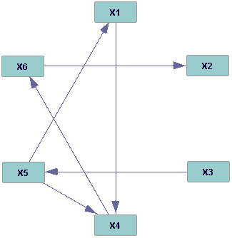 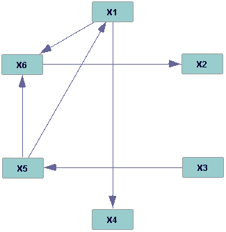When these two graphs are input into the graph compare box, a window appears which allows you to specify which of the two graphs is the reference graph. When the comparison is complete, the following window results

When the listed changes have been made to the second graph, it will be identical to the first graph.
If one of the parent boxes contains multiple graphs, each graph will be compared separately to the reference graph (or the estimated graph will be compared separately to each reference graph, depending on which parent box is selected as the reference), and each comparison will be housed in its own tab, located on the left side of the window.
Tabular Graph Comparisons
A tabular graph comparison tallies up and presents counts of the differences and similarities between a true graph and a reference graph. Consider the example used in the above section; once again, we’ll let graph one be the true graph. Just as above, when the graphs are input to the tabular graph compare box, we must specify which of the graphs is the reference graph, and whether it contains latent variables. When the comparison is complete, the following window results:

The first column lists the number of adjacencies in the reference graph that are also in the true graph. The second column lists the number of adjacencies in the reference graph which are not in the compared graph. The third column lists the number of adjacencies in the comparison graph which are not in the reference graph. The next three columns list analogous information for arrowpoints (orientations of edges).
If one of the parent boxes contains multiple graphs, each graph will be compared separately to the reference graph (or the estimated graph will be compared separately to each reference graph, depending on which parent box is selected as the reference), and the results listed in a separate row of the table.
Misclassifications
A misclassification procedure organizes a graph comparison by edge type. The edge types (undirected, directed, uncertain, partially uncertain, bidirected, and null) are listed as the rows and columns of a matrix, with the reference graph edges as the row headers and the estimate graph edges as the column headers. If, for example, there are three pairs of variables that are connected by undirected edges in the reference graph, but are connected by directed edges in the estimated graph, then there will be a 3 in the (undirected, directed) cell of the matrix. An analogous method is used to represent endpoint errors. For example:

If one of the parent boxes contains multiple graphs, then each estimated graph will be individually compared to the reference graph (or vice versa), and the results housed in their own tab, found on the left.
Graph Intersections
A graph intersection compares two or more graphs in the same comparison. It does so by ranking adjacencies (edges without regard to direction) and orientations based on how many of the graphs they appear in. In an n-graph comparison, it first lists any adjacencies found in all n graphs. Then it lists all adjacencies found in n – 1 graphs, then adjacencies found in n – 2 graphs, and so on.
After it has listed all adjacencies, it lists any orientations that are not contradicted among the graphs, again in descending order of how many graphs the orientation appears in. An uncontradicted orientation is one on which all graphs either agree or have no opinion. So if the edge X Y appears in all n graphs, it will be listed first. If the edge X Z appears in n – 1 graphs, it will be listed next, but only if the nth graph doesn’t contradict it—that is, only if the edge Z X does not appear in the final graph. If the undirected edge Z – X appears in the final graph, the orientation X Z is still considered to be uncontradicted.
Finally, any contradicted orientations (orientations that the graphs disagree on) are listed.
Independence Facts Comparison
Rather than comparing edges or orientation, this option directly compares the implied dependencies in two graphs. When you initially open the box, you will see the following window:

The drop-down menu allows you to choose which variables you want to check the dependence of. If you select more than two variables, an subsequent variables will be considered members of the conditioning set. So, if you select variables X1, X2, and X3, in that order, the box will determine whether X1 is independent of X2, conditional on X3, in each of the graphs being compared. When you click “List,” in the bottom right of the window, the results will be displayed in the center of the window:
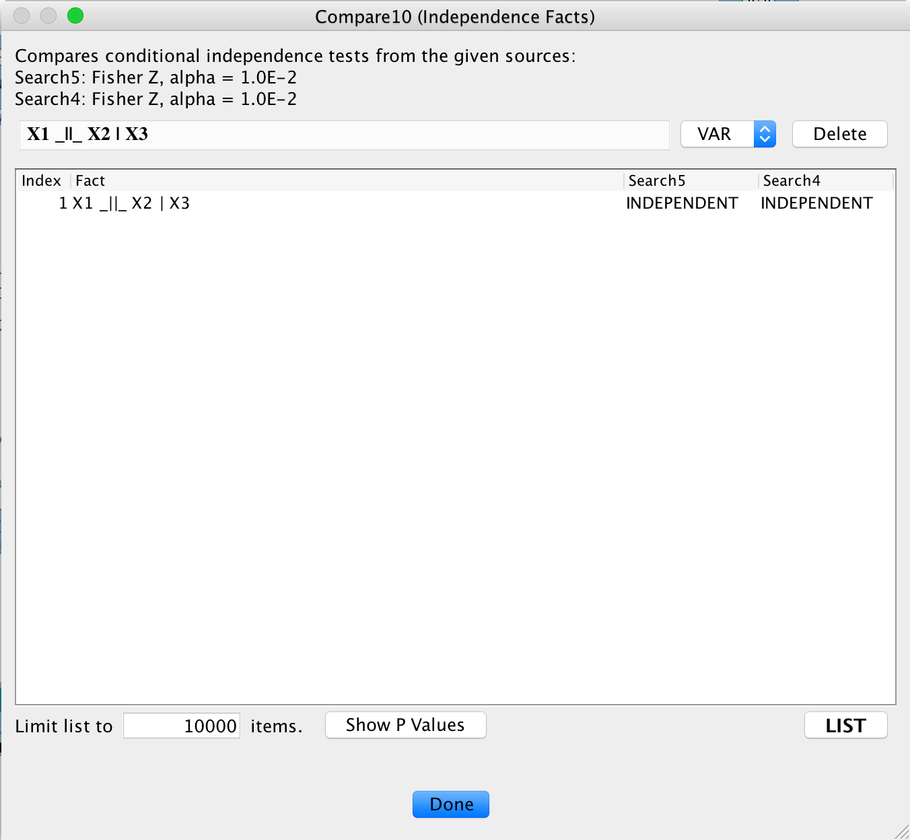Edge Weight Similarity Comparisons
Edge weight (linear coefficient) similarity comparisons compare two linear SEM instantiated models. The output is a score equal to the sum of the squares of the differences between each corresponding edge weight in each model. Therefore, the lower the score, the more similar the two graphs are. The score has peculiarities: it does not take account of the variances of the variables, and may therefore best be used with standardized models; the complete absence of an edge is scored as 0—so a negative coefficient compares less well with a positive coefficient than does no edge at all.
Consider, for example, an edge weight similarity comparison between the following two SEM IMs:
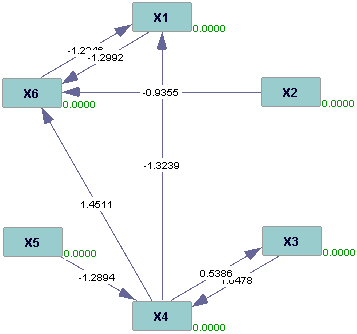
When they are input into an edge weight similarity comparison, the following window results:

This is, unsurprisingly, a high score; the input models have few adjacencies in common, let alone similar parameters.
Model Fit
A model fit comparison takes a simulation box and a search box (ideally, a search that has been run on the simulated data in the simulation box), and provides goodness-of-fit statistics for the output graph and the data, as well as estimating the values of any parameters. It looks and functions identically to the estimator box, but unlike the estimator box, it takes the search box directly as a parent, without needing to isolate and parameterize the graph output by the search.
Parametric Model Box
The parametric model box takes a nonparameterized input graph and creates a causal model.
Possible Parent Boxes of the Parametric Model Box:
- A graph box
- Another parametric model box
- An instantiated model box
- An estimator box
- A data box
- A simulation box
- A search box
- A regression box
Possible Child Boxes of the Parametric Model Box:
- A graph box
- Another parametric model box
- An instantiated model box
- An estimator box
- A data box
- A simulation box
- A search box
- A knowledge box
Bayes Parametric Models
A Bayes parametric model takes as input a DAG. Bayes PMs represent causal structures in which all of the variables are categorical.
Bayes PMs consist of three components: the graphical representation of the causal structure of the model; for each named variable, the number of categories which that variable can assume; and the names of the categories associated with each variable.
You may either manually assign categories to the variables or have Tetrad assign them at random. If you choose to manually create a Bayes PM, each variable will initially be assigned two categories, named numerically. If you choose to have Tetrad assign the categories, you can specify a minimum and maximum number of categories possible for any given variable. You can then manually edit the number of categories and category names.
Take, for example, the following DAG:

One possible random Bayes PM that Tetrad might generate from the above DAG, using the default settings, looks like this:

To view the number and names of the categories associated with each variable, you can click on that variable in the graph, or choose it from the drop-down menu on the right. In this graph, X1 and X2 each have three categories, and the rest of the variables have four categories. The categories are named numerically by default.
The number of categories associated with a particular variable can be changed by clicking up or down in the drop-down menu on the right. Names of categories can be changed by overwriting the text already present.
Additionally, several commonly-used preset variable names are provided under the “Presets” tab on the right. If you choose one of these configurations, the number of categories associated with the current variable will automatically be changed to agree with the configuration you have chosen. If you want all of the categories associated with a variable to have the same name with a number appended (e.g., x1, x2, x3), choose the “x1, x2, x3…” option under Presets.
You can also copy category names between variables in the same Bayes PM by clicking on “Transfer—Copy categories” and “Transfer—Paste categories.”
SEM Parametric Models
The parametric model of a structural equation model (SEM) will take any type of graph as input, as long as the graph contains only directed and bidirected edges. SEM PMs represent causal structures in which all variables are continuous.
A SEM PM has two components: the graphical causal structure of the model, and a list of parameters used in a set of linear equations that define the causal relationships int the model. Each variable in a SEM PM is a linear function of a subset of the other variables and of an error term drawn from a Normal distribution.
Here is an example of a SEM graph and the SEM PM that Tetrad creates from it:


You can see the error terms in the model by clicking “Parameters—Show Error Terms.” In a SEM model, a bidirected edge indicates that error terms are correlated, so when error terms are visible, the edge between X1 and X2 will instead run between their error terms.
To change a parameter’s name or starting value for estimation, double click on the parameter in the window.
Generalized SEM Parametric Models
A generalized SEM parametric model takes as input any type of graph, as long as the graph contains only directed edges. (The generalized SEM PM cannot currently interpret bidirected edges.) Like a SEM PM, it represents causal structures in which all variables are continuous. Also like a SEM PM, a generalized SEM PM contains two components: the graphical causal structure of the model, and a set of equations representing the causal structure of the model. Each variable in a generalized SEM PM is a function of a subset of the other variables and an error term. By default, the functions are linear and the error terms are drawn from a Normal distribution (as in a SEM PM), but the purpose of a generalized SEM PM is to allow editing of these features.
Here is an example of a general graph and the default generalized SEM PM Tetrad creates using it:
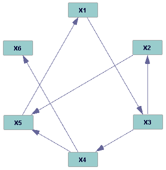 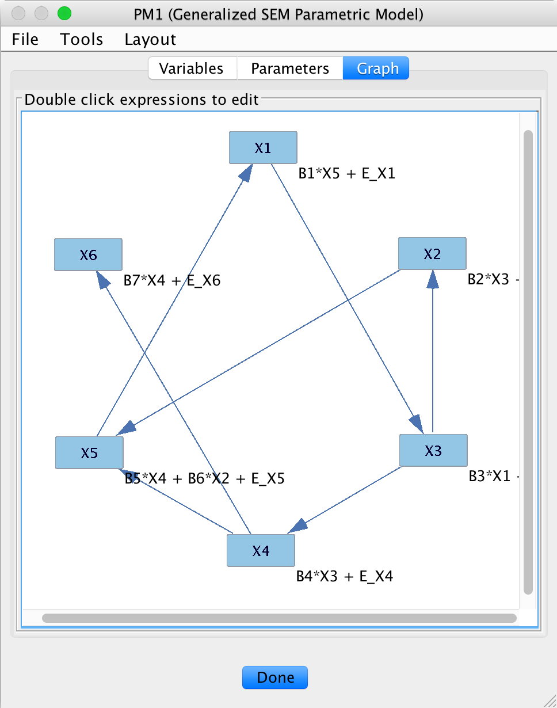You can view the error terms by clicking “Tools: Show Error Terms.”
The Variables tab contains a list of the variables and the expressions that define them, and a list of the error terms and the distributions from which their values will be drawn. Values will be drawn independently for each case if the model is instantiated (see IM box) and used to simulate data (see data box).
The Parameters tab contains a list of the parameters and the distributions from which they are drawn. When the model in instantiated in the IM box, a fixed value of each parameter will be selected according to the specified distribution.
To edit an expression or parameter, double click on it (in any tab). This will open up a window allowing you to change the function that defines the variable or distribution of the parameter.
For instance, if you double click on the expression next to X1 (b1*X5+E_X1), the following window opens:

The drop-down menu at the top of the window lists valid operators and functions. You could, for example, change the expression from linear to quadratic by replacing b1*X5+E_X1 with b1*X5^2+E_X1. You can also form more complicated expressions, using, for instance, exponential or sine functions. If the expression you type is well-formed, it will appear in black text; if it is invalid, it will appear in red text. Tetrad will not accept any invalid changes.
Parameters are edited in the same way as expressions.
If you want several expressions or parameters to follow the same non-linear model, you may wish to use the Apply Templates tool. This allows you to edit the expressions or parameters associated with several variables at the same time. To use the Apply Templates tool, click “Tools: Apply Templates….” This will open the following window:
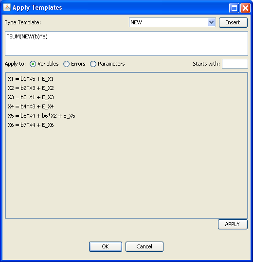You can choose to edit variables, error terms, or parameters by clicking through the “apply to” radio buttons. If you type a letter or expression into the “starts with” box, the template you create will apply only to variables, error terms, or parameters which begin with that letter for expression. For example, in the given generalized PM, there are two types of parameters: the standard deviations s1-s6 and the edge weights b1-b7. If you click on the “Parameters” radio button and type “b” into the “Starts with” box, only parameters b1-b7 will be affected by the changes you make.
The “Type Template” box itself works in the same way that the “Type Expression” box works in the “Edit Expression” window, with a few additions. If you scroll through the drop-down menu at the top of the window, you will see the options NEW, TSUM, and TPROD. Adding NEW to a template creates a new parameter for every variable the template is applied to. TSUM means “sum of the values of this variable’s parents,” and TPROD means “product of the values of this variable’s parents.” The contents of the parentheses following TSUM and TPROD indicate any operations which should be performed upon each variable in the sum or product, with the dollar sign ($) functioning as a wild card. For example, in the image above, TSUM(NEW(b)*$) means that, for each parent variable of the variable in question, a new “b” will be created and multiplied by the parent variable’s value, and then all of the products will be added together.
Instantiated Model Box
The instantiated model (IM) box takes a parametric model and assigns values to the parameters.
Possible Parent Boxes of the Instantiated Model Box:
- A parametric model box
- Another instantiated model box
- An estimator box
- A simulation box
- An updater box
Possible Child Boxes of the Instantiated Model Box:
- A graph box
- A compare box
- A parametric model box
- Another instantiated model box
- An estimator box
- A simulation box
- A search box
- An updater box
- A classify box
- A knowledge box
Bayes Instantiated Models
A Bayes IM consists of a Bayes parametric model with defined probability values for all variables. This means that, conditional on the values of each of its parent variables, there is a defined probability that a variable will take on each of its possible values. For each assignment of a value to each of the parents of a variable X, the probabilities of the several values of X must sum to 1.
You can manually set the probability values for each variable, or have Tetrad assign them randomly. If you choose to have Tetrad assign probability values, you can manually edit them later. If you wish for Tetrad to randomly reassign probability values each time the box is opened, check “Pick new random values every time this Bayes IM is re-initialized.” then if you destroy the model in the box and create a new one, the box will remember the random values it created.
Here is an example of a Bayes PM and its randomly created instantiated model:
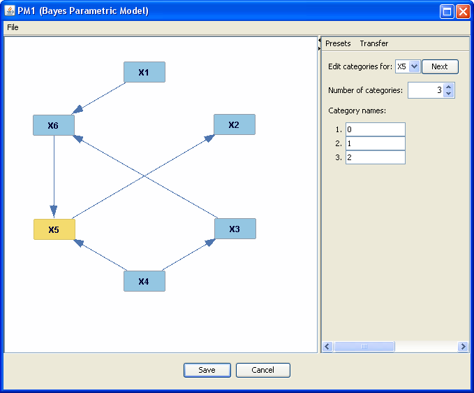 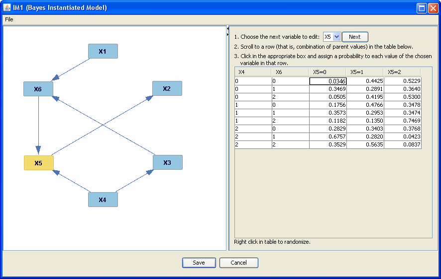In the model above, when X4 and X5 are both 0, the probability that X5 is 0 is 0.0346, that X5 is 1 is 0.4425, and that X5 is 2 is 0.5229. Since X5 must be 0, 1, or 2, those three values must add up to one, as must the values in every row.
To view the probability values of a variable, either double click on the variable in the graph or choose it from the drop-down menu on the right. You can manually set a given probability value by overwriting the text box. Be warned that changing the value in one cell will delete the values in all of the other cells in the row. Since the values in any row must sum to one, if all of the cells in a row but one are set, Tetrad will automatically change the value in the last cell to make the sum correct. For instance, in the above model, if you change the first row such that the probability that X5 = 0 is 0.5000 and the probability that X5 = 1 is 0.4000, the probability that X5 = 2 will automatically be set to 0.1000.
If you right click on a cell in the table (or two-finger click on Macs), you can choose to randomize the probabilities in the row containing that cell, randomize the values in all incomplete rows in the table, randomize the entire table, or randomize the table of every variable in the model. You can also choose to clear the row or table.
Bayes Instantiated Models: Observed Variables Only
This box functions in the same way as a Bayes IM box, but represents only measured variables in the model.
Dirichlet Instantiated Models
A Dirichlet instantiated model is a specialized form of a Bayes instantiated model. Like a Bayes IM, a Dirichlet IM consists of a Bayes parametric model with defined probability values. Unlike a Bayes IM, these probability values are not manually set or assigned randomly. Instead, the pseudocount is manually set or assigned uniformly, and the probability values are derived from it. The pseudocount of a given value of a variable is the number of data points for which the variable takes on that value, conditional on the values of the variable’s parents, where these numbers are permitted to take on non-negative real values. Since we are creating models without data, we can set the pseudocount to be any number we want. If you choose to create a Dirichlet IM, a window will open allowing you to either manually set the pseudocounts, or have Tetrad set all the pseudocounts in the model to one number, which you specify.
Here is an example of a Bayes PM and the Dirichlet IM which Tetrad creates from it when all pseudocounts are set to one:
 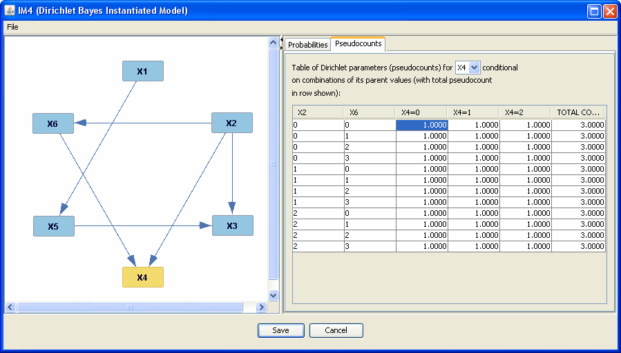
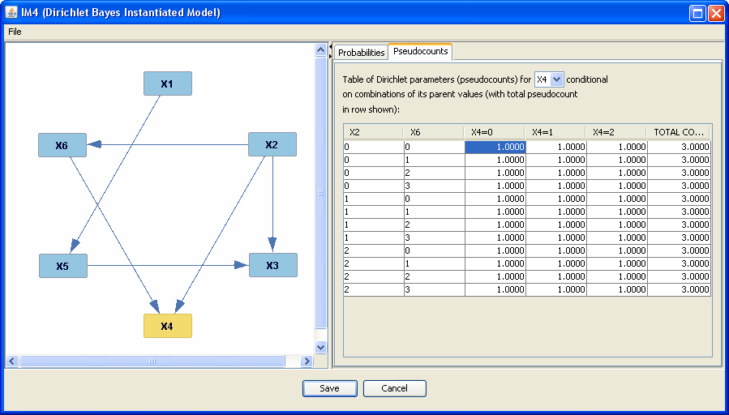
In the above model, when X2=0 and X6=0, there is one (pseudo) data point at which X4=0, one at which X4=1, and one at which X4=2. There are three total (pseudo) data points in which X2=0 and X6=0. You can view the pseudocounts of any variable by clicking on it in the graph or choosing it from the drop-down menu at the top of the window. To edit the value of a pseudocount, double click on it and overwrite it. The total count of a row cannot be directly edited.
From the pseudocounts, Tetrad determines the conditional probability of a category. This estimation is done by taking the pseudocount of a category and dividing it by the total count for its row. For instance, the total count of X4 when X2=0 and X6=0 is 3. So the conditional probability of X4=0 given that X2=0 and X6=0 is 1/3. The reasoning behind this is clear: in a third of the data points in which X2 and X6 are both 0, X4 is also 0, so the probability that X4=0 given that X2 and X6 also equal 0 is probably one third. This also guarantees that the conditional probabilities for any configuration of parent variables add up to one, which is necessary.
To view the table of conditional probabilities for a variable, click the Probabilities tab. In the above model, the Probabilities tab looks like this:
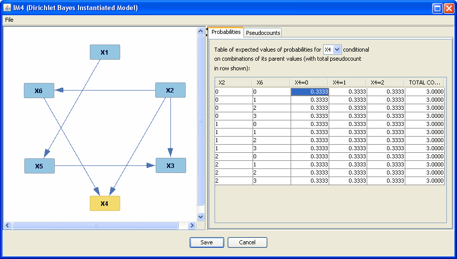SEM Instantiated Models
A SEM instantiated model is a SEM parametric model in which the parameters and error terms have defined values. If you choose to create a SEM IM, the following window will open:
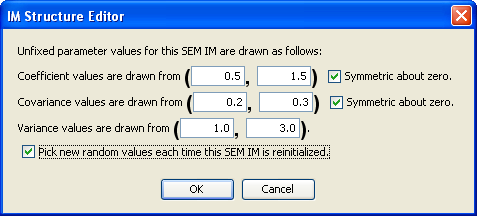Using this box, you can specify the ranges of values from which you want coefficients, covariances, and variances to be drawn for the parameters in the model. In the above box, for example, all linear coefficients will be between -1.5 and -0.5 or 0.5 and 1.5. If you uncheck “symmetric about zero,” they will only be between 0.5 and 1.5.
Here is an example of a SEM PM and a SEM IM generated from it using the default settings:


You can now manually edit the values of parameters in one of two ways. Double clicking on the parameter in the graph will open up a small text box for you to overwrite. Or you can click on the Tabular Editor tab, which will show all of the parameters in a table which you can edit. The Tabular Editor tab of our SEM IM looks like this:
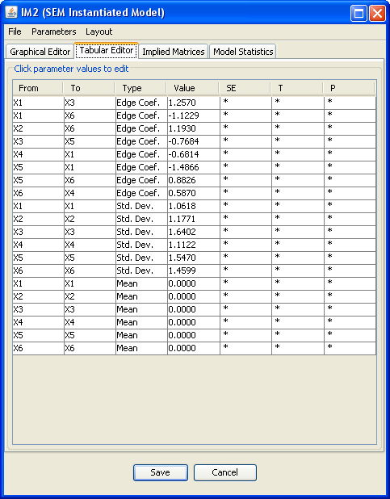In the Tabular Editor tab of a SEM estimator box (which functions similarly to the SEM IM box), the SE, T, and P columns provide statistics showing how robust the estimation of each parameter is. Our SEM IM, however, is in an instantiated model box, so these columns are empty.
The Implied Matrices tab shows matrices of relationships between variables in the model. In the Implied Matrices tab, you can view the covariance or correlation matrix for all variables (including latents) or just measured variables. In our SEM IM, the Implied Matrices tab looks like this:
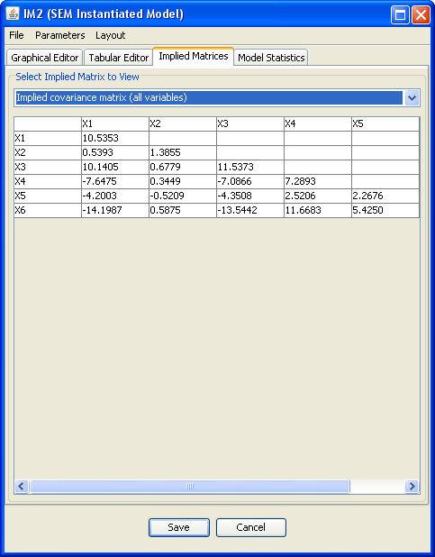You can choose the matrix you wish to view from the drop-down menu at the top of the window. Only half of any matrix is shown, because in a well-formed acyclic model, the matrices should be symmetric. The cells in the Implied Matrices tab cannot be edited.
In an estimator box, the Model Statistics tab provides goodness of fit statistics for the SEM IM which has been estimated. Our SEM IM, however, is in an instantiated model box, so no estimation has occurred, and the Model Statistics tab is empty.
Standardized SEM Instantiated Models
A standardized SEM instantiated model consists of a SEM parametric model with defined values for its parameters. In a standardized SEM IM, each variable (not error terms) has a Normal distribution with 0 mean and unit variance. The input PM to a standardized SEM IM must be acyclic.
Here is an example of an acyclic SEM PM and the standardized SEM IM which Tetrad creates from it
 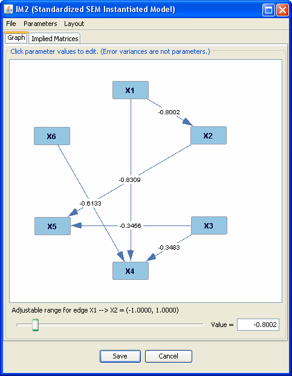
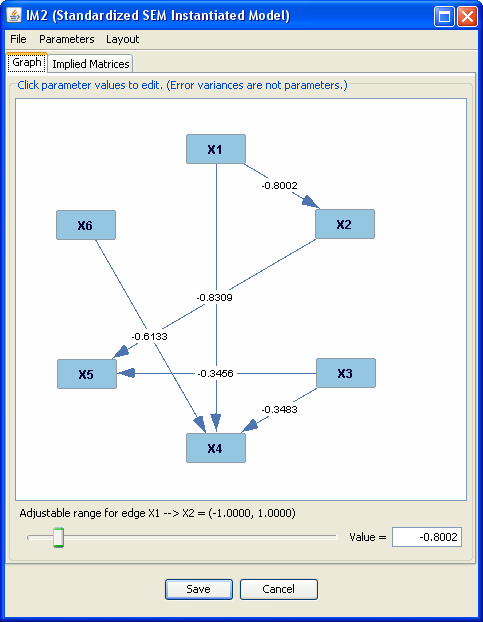
To edit a parameter, double click on it. A slider will open at the bottom of the window (shown above for the edge parameter between X1 and X2). Click and drag the slider to change the value of the parameter, or enter the specific value you wish into the box. The value must stay within a certain range in order for the Normal distribution to stay standardized, so if you attempt to overwrite the text box on the bottom right with a value outside the listed range, Tetrad will not allow it. In a standardized SEM IM, error terms are not considered parameters and cannot be edited, but you can view them by clicking Parameters: Show Error Terms.
The Implied Matrices tab works in the same way that it does in a normal SEM IM.
Generalized SEM Instantiated Models
A generalized SEM instantiated model consists of a a generalized SEM parametric model with defined values for its parameters. Since the distributions of the parameters were specified in the SEM PM, Tetrad does not give you the option of specifying these before it creates the instantiated model.
Here is an example of a generalized SEM PM and its generalized SEM IM:
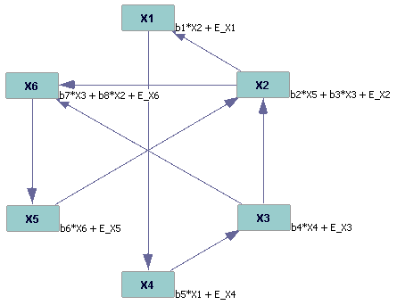 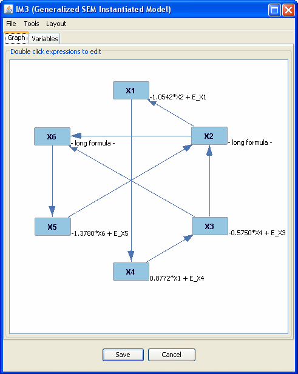Note that the expressions for X6 and X2 are not shown, having been replaced with the words “long formula.” Formulae over a certain length—the default setting is 25 characters—are hidden to improve visibility. Long formulae can be viewed in the Variables tab, which lists all variables and their formulae. You can change the cutoff point for long formulae by clicking Tools: Formula Cutoff.
If you double click on a formula in either the graph or the Variables tab, you can change the value of the parameters in that formula.
Data Box
The data box stores or manipulates data sets.
Possible Parent Boxes of the Data Box
- A graph box
- An estimator box
- Another data box
- A simulation box
- A regression box
Possible Child Boxes of the Data Box
- A graph box
- A parametric model box
- Another data box
- An estimator box
- A simulation box
- A search box
- A classify box
- A regression box
- A knowledge box
Using the Data Box:
The data box stores the actual data sets from which causal structures are determined. Data can be loaded into the data box from a preexisting source, manually filled in Tetrad, or simulated from an instantiated model.
Loading Data
Data sets loaded into Tetrad may be categorical, continuous, mixed, or covariance data.
Covariance matrices loaded into Tetrad should be ascii text files. The first row contains the sample size, the second row contains the names of the variables. The first two rows are followed by a lower triangular matrix. For example:
1000 X1 X2 X3 X4 X5 X6 1.0000 0.0312 1.0000 -0.5746 0.4168 1.0000 -0.5996 0.4261 0.9544 1.0000 0.8691 0.0414 -0.4372 -0.4487 1.0000 0.6188 0.0427 -0.1023 -0.0913 0.7172 1.0000
Categorical, continuous, or mixed data should also be an ascii text file, with columns representing variables and rows representing cases. Beyond that, there is a great deal of flexibility in the layout: delimiters may be commas, colons, tabs, spaces, semicolons, pipe symbols, or whitespace; comments and missing data may be marked by any symbol you like; there may be a row of variable names or not; and case IDs may be present or not. There should be no sample size row. For example:
X1 X2 X3 X4 X5 -3.0133 1.0361 0.2329 2.7829 -0.2878 0.5542 0.3661 0.2480 1.6881 0.0775 3.5579 -0.7431 -0.5960 -2.5502 1.5641 -0.0858 1.0400 -0.8255 0.3021 0.2654 -0.9666 -0.5873 -0.6350 -0.1248 1.1684 -1.7821 1.8063 -0.9814 1.8505 -0.7537 -0.8162 -0.6715 0.3339 2.6631 0.9014 -0.3150 -0.5103 -2.2830 -1.2462 -1.2765 -4.1204 2.9980 -0.3609 4.8079 0.6005 1.4658 -1.4069 1.7234 -1.7129 -3.8298
To load data, create a data box with no parent. When you open it, an empty data window will appear:
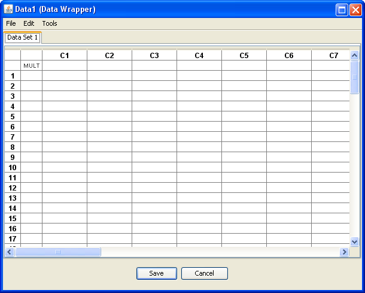Click File: Load Data… and select the text file or files that contain your data. The following window will appear:
The text of the source file appears in the Data Preview window. Above, there are options to describe your file, so that Tetrad can load it correctly. If you are loading categorical, continuous, or mixed data values, select the “Tabular Data” button. If you are loading a covariance matrix, select “Covariance Data.” Note that if you are loading a covariance matrix, your text file should contain only the lower half of the matrix, as Tetrad will not accept an entire matrix.
Below the file type, you can specify a number of other details about your file, including information about the type of data (categorical/continuous/mixed), delimiter between data values, variable names, and more. If your data is mixed (some variables categorical, and some continuous), you must specify the maximum number of categories discrete variables in your data can take on. All columns with more than that number of values will be treated as continuous; the others will be treated as categorical. If you do not list the variable names in the file, you should uncheck “First row variable names.” If you provide case IDs, check the box for the appropriate column in the “Case ID column to ignore” area. If the case ID column is labeled, provide the name of the label; otherwise, the case ID column should be the first column, and you should check “First column.”
Below this, you can specify your comment markers, quote characters, and the character which marks missing data values. Tetrad will use that information to distinguish continuous from discrete variables. You may also choose more files to load (or remove files that you do not wish to load) in the “Files” panel on the lower left.
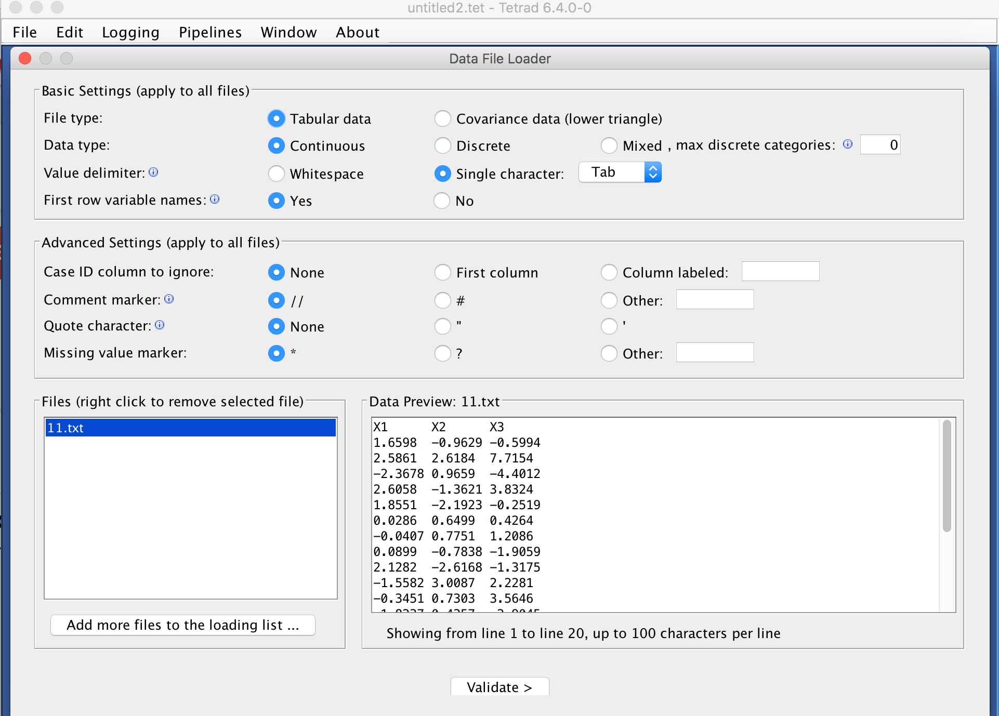When you are satisfied with your description of your data, click “Validate” at the bottom of the window. Tetrad will check that your file is correctly formatted. If it is, you will receive a screen telling you that validation has passed with no error. At this point, you can revisit the settings page, or click “Load” to load the data.
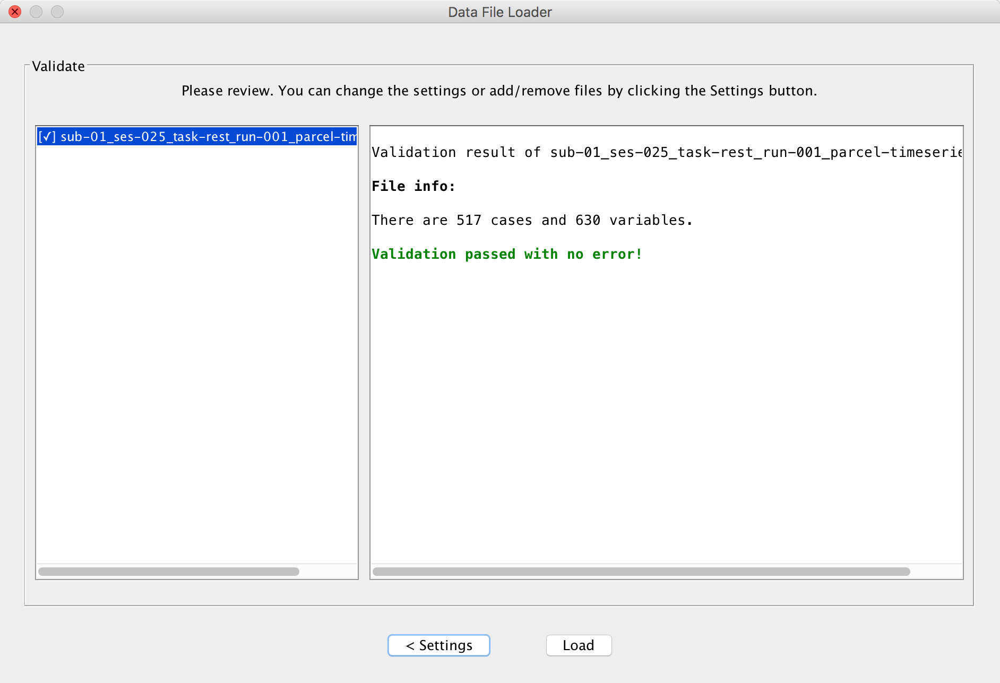 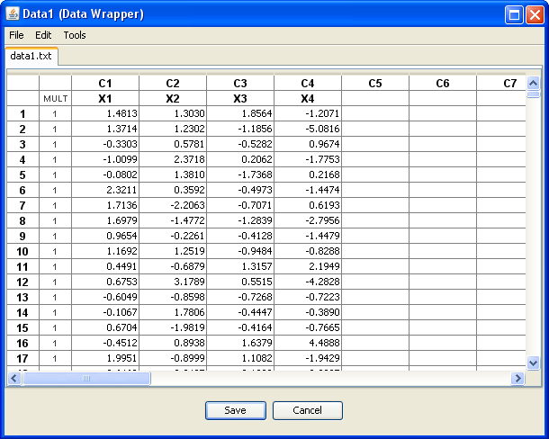You can now save this data set to a text file by clicking File: Save Data.
In addition to loading data from a file, you can manually enter data values and variable names by overwriting cells in the data table.
Manipulating Data
The data box can also be used to manipulate data sets that have already been loaded or simulated. If you create a data box as the child of another box containing a data set, you will be presented with a list of operations that can be performed on the data. The available data manipulations are:
Discretize Dataset:
This operation allows you to make some or all variables in a data set discrete. If you choose it, a window will open.
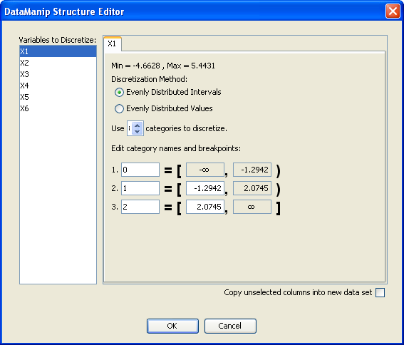When the window first opens, no variables are selected, and the right side of the window appears blank; in this case, we have already selected X1 ourselves. In order to discretize a variable, Tetrad assigns all data points within a certain range to a category. You can tell Tetrad to break the range of the dataset into approximately even sections (Evenly Distributed Intervals) or to break the data points themselves into approximately even chunks (Evenly Distributed Values). Use the scrolling menu to increase or decrease the number of categories to create. You can also rename categories by overwriting the text boxes on the left, or change the ranges of the categories by overwriting the text boxes on the right. To discretize another variable, simply select it from the left. If you want your new data set to include the variables you did not discretize, check the box at the bottom of the window.
You may discretize multiple variables at once by selecting multiple variables. In this case, the ranges are not shown, as they will be different from variable to variable.
Discretize Dataset
Convert Numerical Discrete to Continuous: If you choose this option, any discrete variables with numerical category values will be treated as continuous variables with real values. For example, “1” will be converted to “1.0.”
Discretize Dataset:
Calculate: The Calculate option allows you to add and edit relationships between variables in your data set, and to add new variables to the data set.
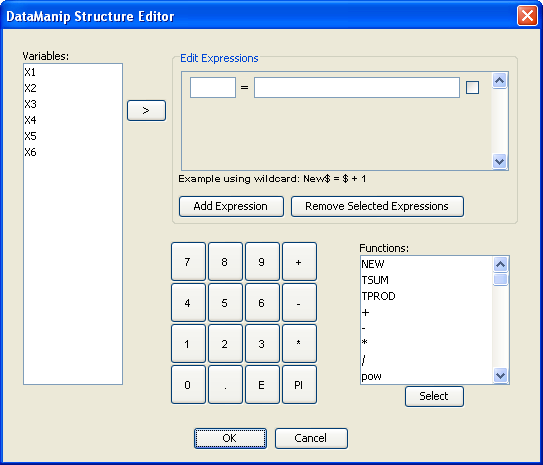In many ways, this tool works like the Edit Expression window in a generalized SEM parametric model. To edit the formula that defines a variable (which will change that variable’s values in the table) type that variable name into the text box to the left of the equals sign. To create a new variable, type a name for that variable into the text box to the left of the equals sign. Then, in the box on the right, write the formula by which you wish to define a new variable in place of, or in addition to, the old variable. You can select functions from the scrolling menu below. (For an explanation of the meaning of some the functions, see the section on generalized SEM models in the Parametric Model Box chapter.) To edit or create several formulae at once, click the “Add Expression” button, and another blank formula will appear. To delete a formula, check the box next to it and click the “Remove Selected Expressions” button.
When you click “Save” a table will appear listing the data. Values of variables whose formulae you changed will be changed, and any new variables you created will appear with defined values.
Merge Datasets
This operation takes two or more data boxes as parents and creates a data box containing all data sets in the parent boxes. Individual data sets will be contained in their own tabs in the resulting box.
Convert to Correlation Matrix
This operation takes a tabular data set and outputs the lower half of the correlation matrix of that data set.
Convert to Covariance Matrix
This operation takes a tabular data set and outputs the lower half of the covariance matrix of that data set.
Inverse Matrix
This operation takes a covariance or correlation matrix and outputs its inverse. (Note: The output will not be acceptable in Tetrad as a covariance or correlation matrix, as it is not lower triangular.)
Simulate Tabular from Covariance
This operation takes a covariance matrix and outputs a tabular data set whose covariances comply with the matrix.
Difference of Covariance Matrices
This operation takes two covariance matrices and outputs their difference. The resulting matrix will be a well-formatted Tetrad covariance matrix data set.
Sum of Covariance Matrices
This operation takes two covariance matrices and outputs their sum. The resulting matrix will be a well-formatted Tetrad covariance matrix data set.
Average of Covariance Matrices
This operation takes two or more covariance matrices and outputs their average. The resulting matrix will be a well-formatted Tetrad covariance matrix data set.
Convert to Time Lag Data
This operation takes a tabular data set and outputs a time lag data set, in which each variable is recorded several times over the course of an experiment. You can specify the number of lags in the data. Each contains the same data, shifted by one “time unit.” For instance, if the original data set had 1000 cases, and you specify that the time lag data set should contain two lags, then the third stage variable values will be those of cases 1 to 998, the second stage variable values will be those of cases 2 to 999, and the first stage variable values will be those of cases 3 to 1000.
Convert to Time Lag Data with Index
This operation takes a tabular data set and outputs a time lag data set in the same manner as “Convert to Time Lag Data,” then adds an index variable.
Convert to AR Residuals
This operation is performed on a time lag data set. Tetrad performs a linear regression on each variable in each lag with respect to each of the variables in the previous lag, and derives the error terms. The output data set contains only the error terms.
Whiten
Takes a continuous tabular data set and converts it to a data set whose covariance matrix is the identity matrix.
Nonparanormal Transform
Takes a continuous tabular data set and increases its Gaussianity, using a nonparanormal transformation to smooth the variables. (Note: This operation increases only marginal Gaussanity, not the joint, and in linear systems may eliminate information about higher moments that can aid in non-Gaussian orientation procedures.)
Convert to Residuals
The input for this operation is a directed acyclic graph (DAG) and a data set. Tetrad performs a linear regression on each variable in the data set with respect to all of the variables that the graph shows to be its parents, and derives the error terms. The output data set contains only the error terms.
Standardize Data
This operation manipulates the data in your data set such that each variable has 0 mean and unit variance.
Remove Cases with Missing Values
If you choose this operation, Tetrad will remove any row in which one or more of the values is missing.
Replace Missing Values with Column Mode
If you choose this operation, Tetrad will replace any missing value markers with the most commonly used value in the column.
Replace Missing Values with Column Mean
If you choose this operation, Tetrad will replace any missing value markers with the average of all of the values in the column. Replace Missing Values with Regression Predictions: If you choose this operation, Tetrad will perform a linear regression on the data in order to estimate the most likely value of any missing value.
Replace Missing Values by Extra Category
This operation takes as input a discrete data set. For every variable which has missing values, Tetrad will create an extra category for that variable (named by default “Missing”) and replace any missing data markers with that category.
Replace Missing with Random
For discrete data, replaces missing values at random from the list of categories the variable takes in other cases. For continuous data, finds the minimum and maximum values of the column (ignoring the missing values) and picks a random number from U(min, max)
Inject Missing Data Randomly
If you choose this operation, Tetrad will replace randomly selected data values with a missing data marker. You can set the probability with which any particular value will be replaced (that is, approximately the percentage of values for each variable which will be replaced with missing data markers).
Bootstrap Sample
This operation draws a random subset of the input data set (you specify the size of the subset) with replacement (that is, cases which appear once in the original data set can appear multiple times in the subset). The resulting data set can be used along with similar subsets to achieve more accurate estimates of parameters.
Split by Cases
This operation allows you to split a data set into several smaller data sets. When you choose it, a window opens.
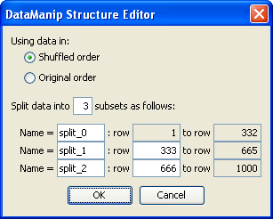If you would like the subsets to retain the ordering they had in the original set, click “Original Order.” Otherwise, the ordering of the subsets will be assigned at random. You can also increase and decrease the number of subsets created, and specify the range of each subset.
Permute Rows
This operation randomly reassigns the ordering of a data set’s cases.
First Differences
This operation takes a tabular data set and outputs the first differences of the data (i.e., if X is a variable in the original data set and X’ is its equivalent in the first differences data set, X’1 = X2 – X1). The resulting data set will have one fewer row than the original.
Concatenate Datasets
This operation takes two or more datasets and concatenates. The parent datasets must have the same number of variables.
Copy Continuous Variables
This operation takes as input a data set and creates a new data set containing only the continuous variables present in the original.
Copy Discrete Variables
This operation takes as input a data set and creates a new data set containing only the discrete variables present in the original.
Remove Selected Variables
Copy Selected Variables
As explained above, you can select an entire column in a data set by clicking on the C1, C2, C3, etc… cell above the column. To select multiple columns, press and hold the “control” key while clicking on the cells. Once you have done so, you can use the Copy Selected Variables tool to create a data set in which only those columns appear.
Remove Constant Columns
This operation takes a data set as input, and creates a data set which contains all columns in the original data set except for those with constant values (such as, for example, a column containing nothing but 2’s).
Randomly Reorder Columns
This operation randomly reassigns the ordering of a data set’s variables.
Manually Editing Data
Under the Edit tab, there are several options to manipulate data. If you select a number of cells and click “Clear Cells,” Tetrad will replace the data values in the selected cells with a missing data marker. If you select an entire row or column and click “Delete selected rows or columns,” Tetrad will delete all data values in the row or column, and the name of the row or column. (To select an entire column, click on the category number above it, labeled C1, C2, C3, and so on. To select an entire row, click on the row number to the left of it, labeled 1, 2, 3, and so on.) You can also copy, cut, and paste data values to and from selected cells. You can choose to show or hide category names, and if you click on “Set Constants Col to Missing,” then in any column in which the variable takes on only one value (for example, a column in which every cell contains the number 2) Tetrad will set every cell to the missing data marker.
Under the Tools tab, the Calculator tool allows you add and edit relationships between variables in the graph. For more information on how the Calculator tool works, see “Manipulating Data” section above.
Data Information
Under the Tools tab, there are options to view information about your data in several different formats.
The Histograms tool shows histograms of the variables in the data set.
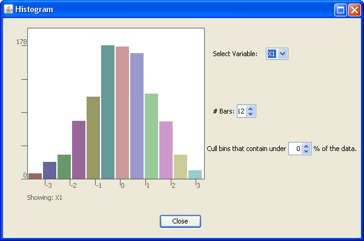These show the distribution of data for each variable, with the width of each bar representing a range of values, and height of each bar representing how many data points fall into that range. Using histograms, you can determine whether each variable has a distribution that is approximately Normal. To select a variable to view, choose it from the drop-down menu on the right. You can increase or decrease the number of bars in the histogram (and therefore decrease or increase the range of each bar, and increase or decrease the accuracy of the histogram) using the menu on the right. You can also view only ranges with a certain amount of the data using the “cull bins” menu.
The Scatter Plots tool allows you to view scatter plots of two variables plotted against each other.
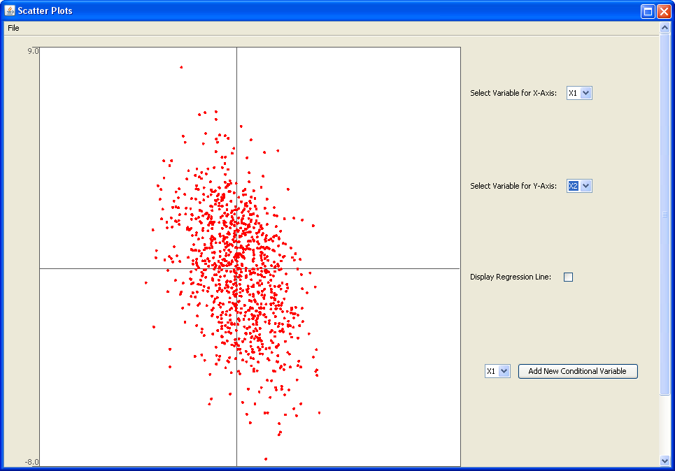To view a variable as the x- or y-axis of the graph, select it from one the drop-down menus to the right. To view the regression line of the graph, check the box on the right.
You can see the correlation of two variables conditional on a third variable by using the Add New Conditional Variable button at the bottom of the window. This will open up a slider and a box in which you can set the granularity of the slider. By moving the slider to the left or right, you can change the range of values of the conditional variable for which the scatter plot shows the correlation of the variables on the x- and y- axes. You can increase and decrease the width of the ranges by changing the granularity of the slider. A slider with granularity 1 will break the values of the conditional variable into sections one unit long, etc. The granularity cannot be set lower than one.
In a well-formed model, the scatter plot of a variable plotted against itself should appear as a straight line along the line y = x.
The Q-Q Plot tool is a test for normality of distribution.
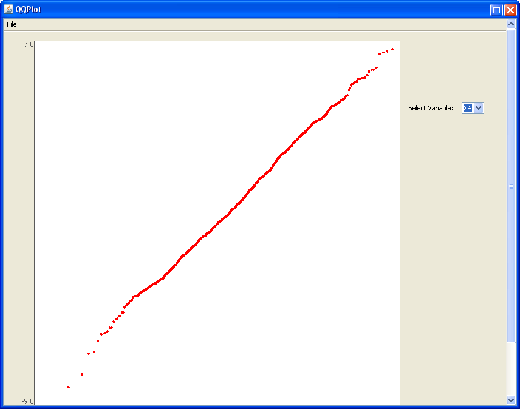If a variable has a distribution which is approximately Normal, its Q-Q plot should appear as a straight line with a positive slope. You can select the variable whose Q-Q plot you wish to view from the drop-down menu on the right.
The Normality Tests tool gives a text box with the results of the Kolmogorov and Anderson Darling Tests for normality for each variable. The Descriptive Statistics tool gives a text box with statistical information such as the mean, median, and variance of each variable.
Estimator Box
The estimator box takes as input a data box (or simulation box) and a parametric model box and estimates, tests, and outputs an instantiated model for the data. With the exception of the EM Bayes estimator, Tetrad estimators do not accept missing values. If your data set contains missing values, the missing values can interpolated or removed using the data box. (Note that missing values are allowed in various Tetrad search procedures; see the section on the search box.)
Possible Parent Boxes of the Estimator Box:
- A parametric model box
- An instantiated model box
- A data box
- A simulation box
Possible Child Boxes of the Estimator Box:
- A graph box
- A compare box
- A parametric model box
- An instantiated model box
- A data box
- A simulation box
- A search box
- An updater box
ML Bayes Estimations
Bayes nets are acyclic graphical models parameterized by the conditional probability distribution of each variable on its parents’ values, as in the instantiated model box. When the model contains no latent variables, the maximum likelihood (ML) estimate of each model parameter is just the corresponding conditional frequency from the data.
The ML Bayes estimator, because it estimates Bayes IMs, works only on models with discrete variables. The model estimated must not include latent variables, and the input data set must not include missing data values. A sample estimate looks like this:

The Model tab works exactly as it does in a Bayes instantiated model. The Model Statistics tab provides the p-value for a chi square test of the model, degrees of freedom, the chi square value, and the Bayes Information Criterion (BIC) score of the model.
Dirichlet Estimations
A Dirichlet estimate estimates a Bayes instantiated model using a Dirichlet distribution for each category. In a Dirichlet estimate, the probability of each value of a variable (conditional on the values of the variable’s parents) is estimated by adding together a prior pseudo count (which is 1, by default) of cases and the number of cases in which the variable takes that value in the data, and then dividing by the total number of cases in the prior and in the data with that configuration of parent variables. The default prior pseudo-count can be changed inside the box. (For a full explanation of pseudocounts and Dirichlet estimate, see the section on Dirichlet instantiated models.)
Dirichlet estimates do not work if the input data set contains missing data values.
EM Bayes Estimations
The EM Bayes estimator takes the same input and gives the same output as the ML Bayes estimator, but is designed to handle data sets with missing data values, and input models with latent variables.
SEM Estimates
A SEM estimator estimates the values of parameters for a SEM parametric model. SEM estimates do not work if the input data set contains missing data values. A sample output looks like this:

Tetrad provides five parameter optimizers: RICF, expectation-maximization (EM), regression, Powell and random search. Accurate regression estimates assume that the input parametric model is a DAG, and that its associated statistics are based on a linear, Gaussian model. The EM optimizer has the same input constraints as regression, but can handle latent variables.
Tetrad also provides two scores that can be used in estimation: feasible generalized least squares (FGLS) and Full Information Maximum Likelihood (FML).
If the graph for the SEM is a DAG, and we may assume that the SEM is linear with Gaussian error terms, we use multilinear regression to estimate coefficients and residual variances. Otherwise, we use a standard maximum likelihoood fitting function (see Bollen, Structural Equations with Latent Variables, Wiley, 1989, pg. 107) to minimize the distance between (a) the covariance over the variables as implied by the coefficient and error covariance parameter values of the model and (b) the sample covariance matrix. Following Bollen, we denote this function Fml; it maps points in parameter values space to real numbers, and, when minimized, yields the maximum likelihood estimation point in parameter space.
In either case, an Fml value may be obtained for the maximum likelihood point in parameter space, either by regression or by direct minimization of the Fml function itself. The value of Fml at this minimum (maximum likelihood) point, multiplied by N - 1 (where N is the sample size), yields a chi square statistics (ch^2) for the model, which when referred to the chi square table with appropriate degrees of freedom, yields a model p value. The degrees of freedom (dof) in this case is equal to the m(m-1)/2 - f, where m is the number of measured variables, and f is the number of free parameters, equal to the number of coefficient parameters plus the number of covariance parameters. (Note that the degrees of freedom many be negative, in which case estimation should not be done.) The BIC score is calculated as ch^2 - dof * log(N).
You can change which score optimizer Tetrad uses by choosing them from the drop-down menus at the bottom of the window and clicking “Estimate Again.”
The Tabular Editor and Implied Matrices tabs function exactly as they do in the instantiated model box, but in the estimator box, the last three columns of the table in the Tabular Editor tab are filled in. The SE, T, and P columns provide the standard errors, t statistics, and p values of the estimation.
The Model Statistics tab provides the degrees of freedom, chi square, p value, comparative fit index (CFI), root mean square error of approximation (RMSEA) and BIC score of a test of the model. It should be noted that while these test statistics are standard, they are not in general correct. See Mathias Drton, 2009, Likelihood ratio tests and singularities. Annals of Statistics 37(2):979-1012. arXiv:math.ST/0703360.
Updater Box
The updater box takes an instantiated model as input, and, given information about the values of parameters in that model, updates the information about the values and relationships of other parameters.
There are four available updater algorithms in Tetrad: the approximate updater, the row summing exact updater, the CPT invariant updater, and the SEM updater. All except for the SEM updater function only when given Bayes instantiated models as input; the SEM updater functions when given a SEM instantiated model as input. None of the updaters work on cyclic models.
Possible Parent Boxes of the Updater Box:
- An instantiated model box
- An estimator box
Possible Child Boxes of the Updater Box:
- A graph box
- An instantiated model box
- An estimator box
Approximate Updater
The approximated updater is a fast but inexact algorithm. It randomly draws a sample data set from the instantiated model and calculates the conditional frequency of the variable to be estimated.
Take, for example, the following instantiated model:
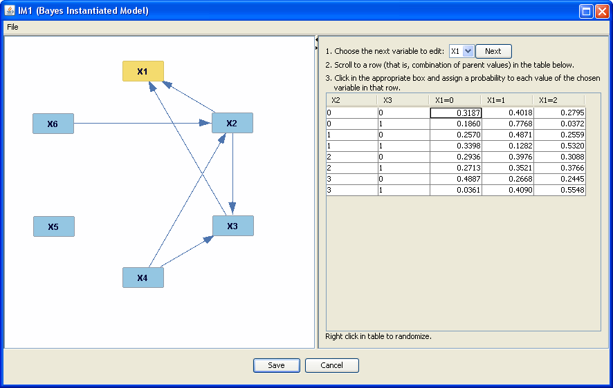When it is input into the approximate updater, the following window results:

If we click “Do Update Now” now, without giving the updater any evidence, the right side of the screen changes to show us the marginal probabilities of the variables.
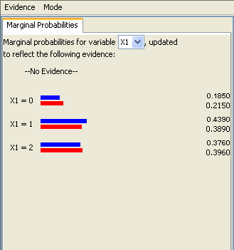The blue lines, and the values listed across from them, indicate the probability that the variable takes on the given value in the input instantiated model. The red lines indicate the probability that the variable takes on the given value, given the evidence we’ve added to the updater.
Since we have added no evidence to the updater, the red and blue lines are very similar in length. To view the marginal probabilities for a variable, either click on the variable in the graph to the left, or choose it from the scrolling menu at the top of the window. At the moment, they should all be very close to the marginal probabilities taken from the instantiated model.
Now, we’ll return to the original window. We can do so by clicking “Edit Evidence” under the Evidence tab. Suppose we know that X1 takes on the value 1 in our model, or suppose we merely want to see how X1 taking that value affects the values of the other variables. We can click on the box that says “1” next to X1. When we click “Do Update Now,” we again get a list of the marginal probabilities for X1.

Now that we have added evidence, the “red line” marginal probabilities have changed; for X1, the probability that X1=1 is 1, because we’ve told Tetrad that that is the case. Likewise, the probabilities that X1=0 and X1=2 are both 0.
Now, let’s look at the updated marginal probabilities for X2, a parent of X1.
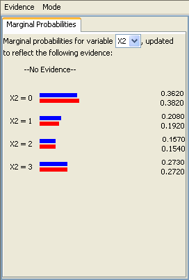 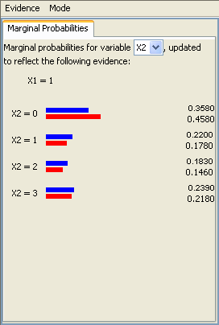The image on the left is the marginal probabilities before we added the evidence that X1=1. The image on the right is the updated marginal probabilities. They have changed; in particular, it has become much more likely that X2=0.
Under the Mode tab, we can change the type of information that the updater box gives us. The mode we have been using so far is “Marginals Only (Multiple Variables).” We can switch the mode to “In-Depth Information (Single Variable).” Under this mode, when we perform the update, we receive more information (such as log odds and joints, when supported; joint probabilities are not supported by the approximate updater), but only about the variable which was selected in the graph when we performed the update. To view information about a different variable, we must re-edit the evidence with that variable selected.
If the variable can take one of several values, or if we know the values of more than one variable, we can select multiple values by pressing and holding the Shift key and then making our selections. For instance, in the model above, suppose that we know that X1 can be 1 or 2, but not 0. We can hold the Shift key and select the boxes for 1 and 2, and when we click “Do Update Now,” the marginal probabilities for X2 look like this:

Since X1 must be 1 or 2, the updated probability that it is 0 is now 0. The marginal probabilities of X2 also change:

The updated marginal probabilities are much closer to their original values than they were when we knew that X1 was 1.
Finally, if we are arbitrarily setting the value of a variable—that is, the values of its parents have no effect on its value—we can check the “Manipulated” box next to it while we are we editing evidence, and the update will reflect this information.
Row Summing Exact Updater
The row summing exact updater is a slower but more accurate updater than the approximate updater. The complexity of the algorithm depends on the number of variables and the number of categories each variable has. It creates a full exact conditional probability table and updates from that. Its window functions exactly as the approximate updater does, with two exceptions: in “Multiple Variables” mode, you can see conditional as well as marginal probabilities, and in “Single Variable” mode, you can see joint values.
CPT Invariant Exact Updater
The CPT invariant exact updater is more accurate than the approximate updater, but slightly faster than the row summing exact updater. Ifs window functions exactly as the approximate updater down, with one exception: in “Multiple Variables” mode, you can see conditional as well as marginal probabilities.
SEM Updater
The SEM updater does not deal with marginal probabilities; instead, it deals with means.

When it is input to the SEM updater, the following window results:
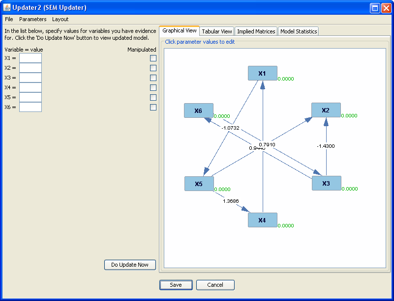Suppose we know that the mean of X1 is .5. When we enter that value into the text box on the left and click “Do Update Now,” the model on the right updates to reflect that mean, changing the means of both X1 and several other variables. In the new model, the means of X2, X4, and X5 will all have changed. If we click the “Manipulated” check box as well, it means that we have arbitrarily set the mean of X1 to .5, and that the value of its parent variable, X4, has no effect on it. The graph, as well as the updated means, changes to reflect this.
The rest of the window has the same functionality as a SEM instantiated model window.
Classify Box
The classify box takes as input a categorical data set and a Bayes instantiated model and, for a given variable, tries to predict that variable’s value in each case based on the other variables’ values in that case.
Possible Parents Boxes of the Classify Box:
- An instantiated model box
- A data box
- A simulation box
Possible Child Boxes of the Classify Box:
- None
Using the Classify Box:
Consider the following instantiated model, and a data set derived from it:
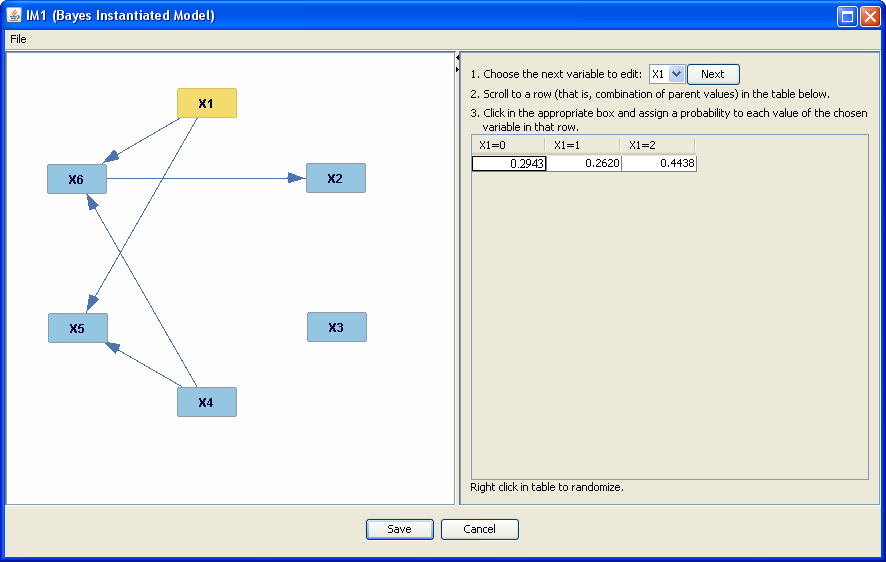When they are input to the classify box, the following window results:

By clicking on the “Test Data” tab, we can see the data set which we input. Now, suppose we want to predict the values of X1 in each case. We select X1 from the scrolling menu at the top and click “Classify.” Three new tabs now appear: “Classification,” “ROC Plot,” and “Confusion Matrix.” The classification tab, in this case, looks like this:
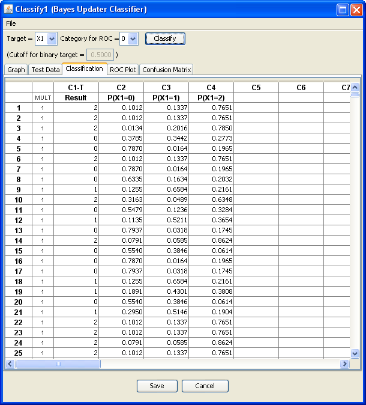There is a column for each of the possible values which X1 can take, and for each case, Tetrad has computed the probability that X1 will take each value, based on the configuration of other variables in that case. It then chooses the category with the highest conditional probability, and assigns X1 that value for that case. Comparison to the test data will show that the values are reasonably (though not completely) similar.
The ROC plot tab displays the receiver operating characteristic (ROC) curve for whichever value you specified before classification.
The confusion matrix tab provides information on how similar the estimated values of the target variable are to the true values (if the true values are available).
Because classification is a form of estimation, the variable which is classified does not have to be in the input data set; it merely has to be in the input instantiated model. In this case, the ROC plot and confusion matrix tabs will not appear.
Knowledge Box
The knowledge box takes as input a graph or a data set and imposes additional constraints onto it, to aid with search.
Possible Parent Boxes of the Knowledge Box:
- A graph box
- A parametric model box
- An instantiated model box
- A data box
- A simulation box
- A search box
- Another knowledge box
Possible Child Boxes of the Knowledge Box:
- A search box
- Another knowledge box
Tiers and Edges
The tiers and edges option allows you to sort variables into groupings that can or cannot affect each other. It also allows you to manually add forbidden and required edges one at a time.
Tiers
The tiers tab for a graph with four variables looks like this:
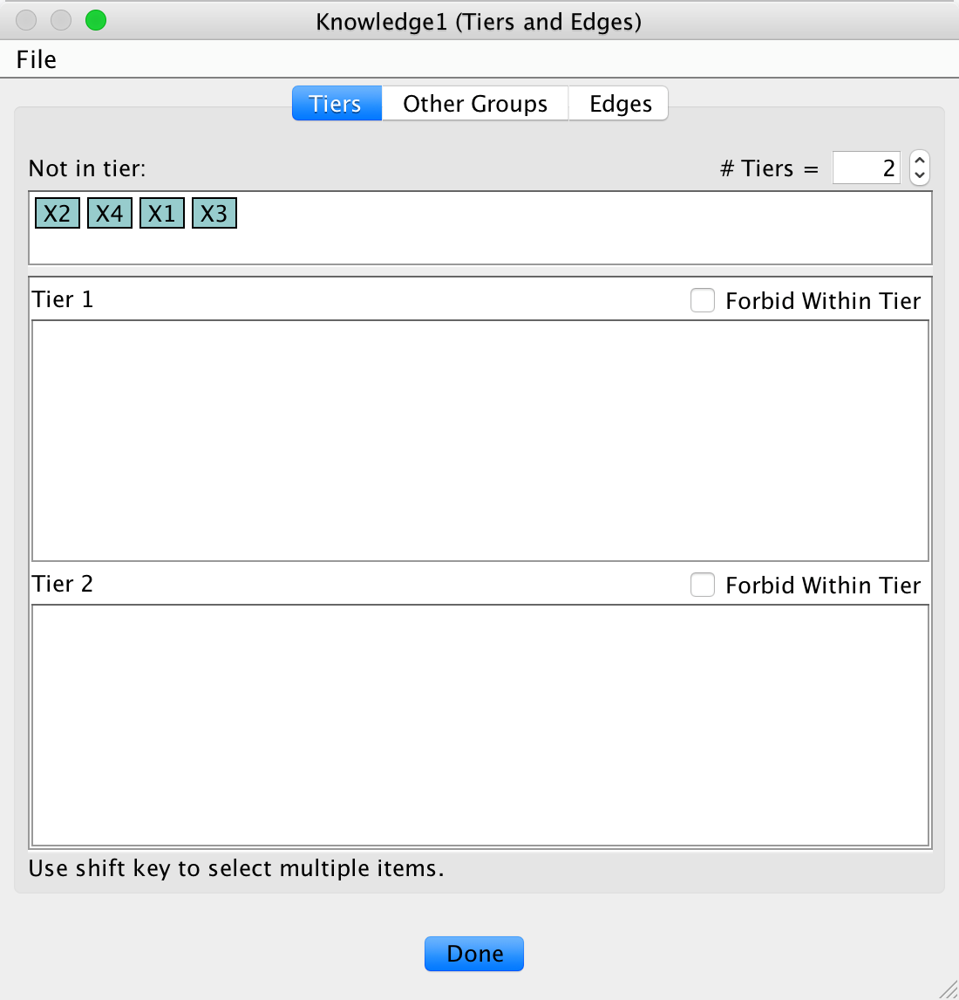Tiers separate your variables into a time line. Variables in higher-numbered tiers occur later than variables in lower-numbered tiers, which gives Tetrad information about causation. For example, a variable in Tier 3 could not possibly be a cause of a variable in Tier 1.
To place a variable in a tier, click on the variable in the “Not in tier” box, and then click on the box of the tier. If you check the “Forbid Within Tier” box for a tier, variables in that tier will not be allowed to be causes of each other. To increase or decrease the number of tiers, use the scrolling box in the upper right corner of the window.
Groups
The groups tab for a graph with four variables looks like this:

In the groups tab, you can specify certain groups of variables which are forbidden or required to cause other groups of variables. To add a variable to the “cause” section of a group, click on the variable in the box at the top, and then click on the box to the left of the group’s arrow. To add a variable to the “effect” section of a group, click on the variable in the box at the top, and then click on the box to the right of the group’s arrow. You can add a group by clicking on one of the buttons at the top of the window, and remove one by clicking the “remove” button above the group’s boxes.
Edges
The edges tab for a graph with four variables looks like this:

In the edges tab, you can require or forbid individual causal edges between variables. To add an edge, click the type of edge you’d like to create, and then click and drag from the “cause” variable to the “effect” variable.
You can also use this tab to see the effects of the knowledge you created in the other tabs by checking and unchecking the boxes at the bottom of the window. You can adjust the layout to mimic the layout of the source (by clicking “source layout”) or to see the variables in their timeline tiers (by clicking “knowledge layout”).
Forbidden Graph
If you use a graph as input to a knowledge box with the “Forbidden Graph” operation, the box will immediately add all edges in the parent graph as forbidden edges. It will otherwise work like a Tiers and Edges box.
Required Graph
If you use a graph as input to a knowledge box with the “Required Graph” operation, the box will immediately add all edges in the parent graph as required edges. It will otherwise work like a Tiers and Edges box.
Measurement Model
This option allows you to build clusters for a measurement model. When first opened, the window looks like this:

You can change the number of clusters using the text box in the upper right hand corner. To place a variable in a cluster, click and drag the box with its name into the cluster pane. To move multiple variables at once, shift- or command-click on the variables, and (without releasing the shift/command button or the mouse after the final click) drag. In the search boxes, these variables will be assumed to be children of a common latent cause.
Simulation Box
The simulation box takes a graph, parametric model, or instantiated model and uses it to simulate a data set.
Possible Parent Boxes of the Simulation Box
- A graph box
- A parametric model box
- An instantiated model box
- An estimator box
- A data box
- Another simulation box
- A search box
- An updater box
- A regression box
Possible Child Boxes of the Simulation Box
- A graph box
- A compare box
- A parametric model box
- An instantiated model box
- An estimator box
- A data box
- Another simulation box
- A search box
- A classify box
- A regression box
- A knowledge box
Using the Simulator Box
When you first open the simulation box, you will see some variation on this window:

The “True Graph” tab contains a copy of the “Generate Subgraphs” function from the graph box. This allows you to isolate subgraphs of the parent graph to use to model data. The “Data” tab will contain the data once it has been simulated.
Exactly what you see and can do in the simulation box is determined by what kind of box you input into it.
The Simulation Box with no Input
Because it has no input box to create constraints, a parentless simulation box offers the greatest freedom for setting the graph type, model type, and parameters of your simulated data. In particular, it is the only way that the simulation box will allow you to create a random graph or graphs within the box. (If you are simulating multiple data sets, and want to use a different random graph for each one, you can select “Yes” under “Yes if a different graph should be used for each run.”) You can choose the type of graph you want Tetrad to create from the “Type of Graph” drop-down list.
Random Forward DAG
This option creates a DAG by randomly adding forward edges (edges that do not point to a variable’s ancestors) one at a time. You can specify graph parameters such as number of variables, maximum and minimum degrees, and connectedness.
Scale Free DAG
This option creates a DAG whose variable’s degrees obey a power law. You can specify graph parameters such as number of variables, alpha, beta, and delta values.
Cyclic, constructed from small loops
This option creates a cyclic graph. You can specify graph parameters such as number of variables, maximum and average degrees, and the probability of the graph containing at least one cycle.
Random One Factor MIM
This option creates a one-factor multiple indicator model. You can specify graph parameters such as number of latent nodes, number of measurements per latent, and number of impure edges.
Random Two Factor MIM
This option creates a two-factor multiple indicator model. You can specify graph parameters such as number of latent nodes, number of measurements per latent, and number of impure edges.
In addition to the graph type, you can also specify the type of model you would like Tetrad to simulate.
Bayes net
Simulates a Bayes instantiated model. You can specify model parameters including maximum and minimum number of categories for each variable.
Structural Equation Model
Simulates a SEM instantiated model. You can specify model parameters including coefficient, variance, and covariance ranges.
Linear Fisher Model
Simulates data using a linear Markov 1 DBN without concurrent edges. The Fisher model suggests that shocks should be applied at intervals and the time series be allowed to move to convergence between shocks. This simulation has many parameters that can be adjusted, as indicated in the interface. The ones that require some explanation are as follows.
- Low end of coefficient range, high end of coefficient range, low end of variance range, high end of variance range. Each variable is a linear function of the parents of the variable (in the previous time lag) plus Gaussian noise. The coefficients are drawn randomly from U(a, b) where a is the low end of the coefficient range and b is the high end of the coefficient range. Here, a < b. The Gaussian noise is drawn uniformly from U(c, d), where c is the low end of the variance range and d is the high end of the variance range. Here, c < d.
- Yes, if negative values should be considered. If no, only positive values will be recorded. This should not be used for large numbers of variables, since it is more difficult to find cases with all positive values when the number of variables is large.
- Percentage of discrete variables. The model generates continuous data, but some or all of the variables may be discretized at random. The user needs to indicate the percentage of variables (randomly chosen that one wishes to have discretized. The default is zero—i.e., all continuous variables.
- Number of categories of discrete variables. For the variables that are discretized, the number of categories to use to discretize each of these variables.
- Sample size. The number of records to be simulated.
- Interval between shocks. The number of time steps between shocks in the model.
- Interval between data recordings. The data are recorded every so many steps. If one wishes to allow to completely converge between steps (i.e., produce equilibrium data), set this interval to some large number like 20 and set the interval between shocks likewise to 20 Other values can be used, however.
- Epsilon for convergence. Even if you set the interval between data recordings to a large number, you can specify an epsilon such that if all values of variables differ from their values one time step back by less than epsilon, the series will be taken to have converged, and the remaining steps between data recordings will be skipped, the data point being recorded at convergence.
Lee & Hastie
This is a model for simulating mixed data (data with both continuous and discrete variables. The model is given in Lee J, Hastie T. 2013, Structure Learning of Mixed Graphical Models, Journal of Machine Learning Research 31: 388-396. Here, mixtures of continuous and discrete variables are treated as log-linear.
- Percentage of discrete variables. The model generates continuous data, but some or all of the variables may be discretized at random. The user needs to indicate the percentage of variables (randomly chosen that one wishes to have discretized. The default is zero—i.e., all continuous variables.
- Number of categories of discrete variables. For the variables that are discretized, the number of categories to use to discretize each of these variables.
- Sample size. The number of records to be simulated.
Time Series
This is a special simulation for representing time series. Concurrent edges are allowed. This can take a Time Series Graph as input, in which variables in the current lag are written as functions of the parents in the current and previous lags.
- Sample size. The number of records to be simulated.
Boolean Glass
The instantiated model used to simulate the data will be re-parameterized for each run of the simulation.
The Simulation Box with a Graph Input
If you input a graph, you will be able to simulate any kind of model, with any parameters. But the model will be constrained by the graph you have input (or the subgraph you choose in the “True Graph” tab.) Because of this, if you create a simulation box with a graph as a parent, you will not see the “Type of Graph” option.
The Simulation Box with a Parametric Model Input
At the time of writing, a simulation box with a parametric model input acts as though the PM’s underlying graph had been input into the box.
The Simulation Box with an Instantiated Model Input
If you input an instantiated model, your only options will be the sample size of your simulation and the number of data sets you want to simulate; Tetrad will simulate every one of them based on the parameters of the IM. The model will not be re-parameterized for each run of the simulation.
Search Box
The search box takes as input a data set (in either a data or simulation box) and optionally a knowledge box, and searches for causal explanations represented by directed graphs. The result of a search is not necessarily—and not usually—a unique graph, but an object such as a pattern that represents a set of graphs, usually a Markov Equivalence class. More alternatives can be found by varying the parameters of search algorithms.
Possible Parent Boxes of the Search Box
- A graph box
- A parametric model box
- An instantiated model box
- An estimator box
- A data box
- A simulation box
- Another search box
- A regression box
- A knowledge box
Possible Child Boxes of the Simulation Box
- A graph box
- A compare box
- A parametric model box
- A simulation box
- Another search box
- A knowledge box
Using the Search Box
When you first open the search box, you will be presented with a number of options for the kind of search you would like to perform:
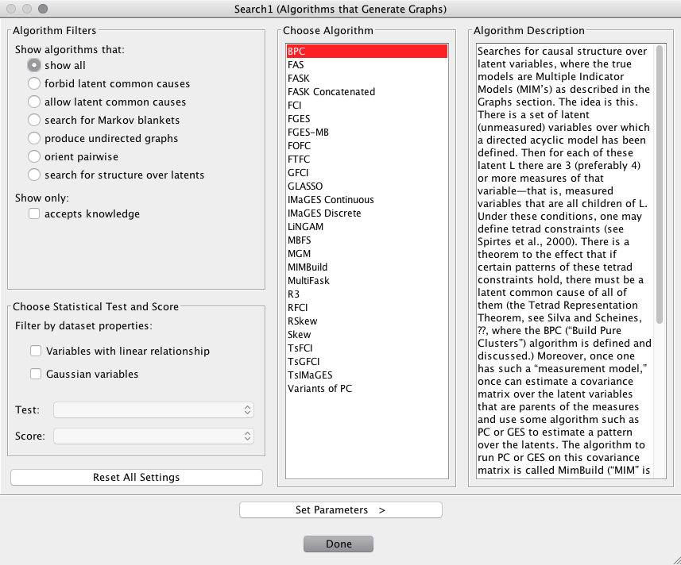The “Output Graphs” tab is where the results of your search will be stored after it has been performed. The “Knowledge” tab contains a copy of the “Tiers and Edges” knowledge box, which you can use to add knowledge directly in the search box. (See the Knowledge Box section for more information.)
In the “Algorithm” tab, you can choose which search algorithm you want to perform, and set any relevant parameters. (As most of the algorithms require different parameters, the contents of the “Parameters” pane will change depending on which algorithm you select.) To choose an algorithm, select it from the drop-down list next to the “Search” button.
Choosing the correct algorithm for your needs is an important consideration. Tetrad provides over 30 search algorithms (and more are added all of the time) each of which makes different assumptions about the input data, uses different parameters, and produces different kinds of output. For instance, some algorithms produce Markov blankets or patterns, and some produce full graphs; some algorithms work best with Gaussian or non-Gaussian data; some algorithms require an alpha value, some require a penalty discount, and some require both or neither. You can narrow down the list using the “List algorithms that” dropdown box, which allows you to limit the provided algorithms according to whichever factor is important to you.
Once you have selected an algorithm, click “Search” to have Tetrad perform the search or searches.
The PC Algorithm
Description
PC algorithm (Spirtes and Glymour, Social Science Computer Review, 1991) is a pattern search which assumes that the underlying causal structure of the input data is acyclic, and that no two variables are caused by the same latent (unmeasured) variable. In addition, it is assumed that the input data set is either entirely continuous or entirely discrete; if the data set is continuous, it is assumed that the causal relation between any two variables is linear, and that the distribution of each variable is Normal. Finally, the sample should ideally be i.i.d.. Simulations show that PC and several of the other algorithms described here often succeed when these assumptions, needed to prove their correctness, do not strictly hold. The PC algorithm will sometimes output double headed edges. In the large sample limit, double headed edges in the output indicate that the adjacent variables have an unrecorded common cause, but PC tends to produce false positive double headed edges on small samples.
The PC algorithm is correct whenever decision procedures for independence and conditional independence are available. The procedure conducts a sequence of independence and conditional independence tests, and efficiently builds a pattern from the results of those tests. As implemented in TETRAD, PC is intended for multinomial and approximately Normal distributions with i.i.d. data. The tests have an alpha value for rejecting the null hypothesis, which is always a hypothesis of independence or conditional independence. For continuous variables, PC uses tests of zero correlation or zero partial correlation for independence or conditional independence respectively. For discrete or categorical variables, PC uses either a chi square or a g square test of independence or conditional independence (see Causation, Prediction, and Search for details on tests). In either case, the tests require an alpha value for rejecting the null hypothesis, which can be adjusted by the user. The procedures make no adjustment for multiple testing. (For PC, CPC, JPC, JCPC, FCI, all testing searches.)
Input Assumptions
The algorithm effectively takes conditional independence facts as input. Thus it will work for any type of data for which a conditional independence facts are known. In the interface, it will work for linear, Gaussian data (the Fisher Z test), discrete multinomial data the Chi Square test) and mixed multinomial/Gaussian data (the Conditional Gaussian test).
Output Format
The graph outputs a pattern (or CP-DAG). This is an equivalence class of directed acyclic graphs (DAGs). Each DAG in the equivalence class has all of the adjacencies (and no more) of the pattern. Each oriented edge in the pattern is so oriented in each of the DAG in the equivalence class. Unoriented edges in the equivalence class cannot be oriented by conditional independence facts. For example, if the model is X->Y->Z, the output will be X—Y—Z. There are not collider in this model, so the algorithm will not detect one. Since there are not colliders, the Meek cannot orient additional edges. If the model were X<-Y<-Z, the output would also be X—Y—Z; this model is in the same equivalence class as X->Y->Z. The model X->Y<-Z would be its own equivalence class, since the collider in this model can be oriented. See Spirtes et al. (2000) for more details.
Parameters
| Parameter | Description |
|---|---|
| Cutoff for p-values (alpha) | Conditional independence tests with p-values greater than this will be judged to be independent (H0). Default 0.01. |
| Maximum size of conditioning set (depth) | PC in the adjacency phase will consider conditioning sets for conditional independences of increasing size, up to this value. For instance, for depth 3, the maximum size of a conditioning set considered will be 3. Default -1 = unlimited. |
The CPC Algorithm
Description
The CPC (Conservative PC) algorithm (Ramsey et al., ??) modifies the collider orientation step of PC to make it more conservative—that is, to increase the precision of collider orientations at the expense of recall. It does this as follows. Say you want to orient X—Y—Z as a collider or a noncollider; the PC algorithm looks at variables adjacent to X or variables adjacent to Z to find a subset S such that X is independent of Z conditional on S. The CPC algorithm considers all possible such sets and records the set on which X is conditionally independent of Z. If all of these sets contain Y, it orients X—Y—Z as a noncollider. If none of them contains Z, if orient X—Y—Z as a collider. If some contain Z but other don’t, it marks it as ambiguous, with an underline. Thus, the output is ambiguous between patterns; in order to get a specific pattern out of the output, one needs first to decide whether the underlined triples are colliders or noncolliders and then to apply the orientation rules in Meek (1997).
The PC algorithm is correct whenever decision procedures for independence and conditional independence are available. The procedure conducts a sequence of independence and conditional independence tests, and efficiently builds a pattern from the results of those tests. As implemented in TETRAD, PC is intended for multinomial and approximately Normal distributions with i.i.d. data. The tests have an alpha value for rejecting the null hypothesis, which is always a hypothesis of independence or conditional independence. For continuous variables, PC uses tests of zero correlation or zero partial correlation for independence or conditional independence respectively. For discrete or categorical variables, PC uses either a chi square or a g square test of independence or conditional independence (see Causation, Prediction, and Search for details on tests). In either case, the tests require an alpha value for rejecting the null hypothesis, which can be adjusted by the user. The procedures make no adjustment for multiple testing. (For PC, CPC, JPC, JCPC, FCI, all testing searches.)
Input Assumptions
Same as for PC.
Output Format
An e-pattern (extended pattern), consistent of directed and undirected edges where some of the triple may have been marked with underlines to indicate ambiguity, as above. It may be that bidirected edges are oriented as X->Y<->X<-W if two adjacent colliders are oriented; this is not ruled out.
Parameters
| Parameter | Description |
|---|---|
| Cutoff for p-values (alpha) | Conditional independence tests with p-values greater than this will be judged to be independent (H0). Default 0.01. |
| Maximum size of conditioning set (depth) | PC in the adjacency phase will consider conditioning sets for conditional independences of increasing size, up to this value. For instance, for depth 3, the maximum size of a conditioning set considered will be 3. Default -1 = unlimited. |
The PCStable Algorithm
Description
See Drton and Maathuis (??). The idea is to modify the adjacency search of PC so that if the order of the variables is randomized, the adjacency output is not affected. This is done as follows. The order of operations for the step where unconditional independencies are calculated is not affected; these may be done in any order. However, for the step in which one conditions on one variable, the output of that step could be affected by the order in which the operations are done. So instead of removing edges in this step, one simply records which edges one would remove, and then at the end of the step removes them all. Similarly for subsequence steps. In this way, the adjacencies of variables in the output of the adjacency step are fixed no matter the order in which the operations are visited. One them does collider orientation and applies the orientation rules in Meek (1997); there may be orientation differences from one run to the next still, if the order of the variables in the dataset is modified.
Input Assumptions
Same as for PC.
Output Format
Same as for PC.
Parameters
| Parameter | Description |
|---|---|
| Cutoff for p-values (alpha) | Conditional independence tests with p-values greater than this will be judged to be independent (H0). Default 0.01. |
| Maximum size of conditioning set (depth) | PC in the adjacency phase will consider conditioning sets for conditional independences of increasing size, up to this value. For instance, for depth 3, the maximum size of a conditioning set considered will be 3. Default -1 = unlimited. |
The CPCStable Algorithm
Description
CPC, with the PC-Stable adjacency step substituted for the PC adjacency search.
Input Assumptions
Same as for PC.
Output Format
Same as for CPC (an e-pattern).
Parameters
| Parameter | Description |
|---|---|
| Cutoff for p-values (alpha) | Conditional independence tests with p-values greater than this will be judged to be independent (H0). Default 0.01. |
| Maximum size of conditioning set (depth) | PC in the adjacency phase will consider conditioning sets for conditional independences of increasing size, up to this value. For instance, for depth 3, the maximum size of a conditioning set considered will be 3. Default -1 = unlimited. |
The PcMax Algorithm
Description
Similar in spirit to CPC but orients all unshielded triples using maximum likelihood conditioning sets. The idea is as follows. The adjacency search is the same as for PC, but colliders are oriented differently. Let X—Y—Z be an unshielded triple (X not adjacent to Z) and find all subsets S from among the adjacents of X or the adjacents of Z such that X is independent of Z conditional on S. However, instead of using the CPC rule to orient the triple, instead just list the p-values for each of these conditional independence judgments and pick the set S’ that yields the highest such p-value. Then orient X->Y<-Z if S does not contain Y and X—Y—Z otherwise. This orients all unshielded triples. It’s possible (though rare) that adjacent triples both both be oriented as 2-cycles, X->Y<->Z<-W. If this happens, pick one of the other of these triples or orient as a collider, arbitrarily. This guarantees that the resulting graph will be a pattern.
Input Assumptions
Same as for PC.
Output Format
Same as PC, a pattern.
Parameters
| Parameter | Description |
|---|---|
| Cutoff for p-values (alpha) | Conditional independence tests with p-values greater than this will be judged to be independent (H0). Default 0.01. |
| Maximum size of conditioning set (depth) | PC in the adjacency phase will consider conditioning sets for conditional independences of increasing size, up to this value. For instance, for depth 3, the maximum size of a conditioning set considered will be 3. Default -1 = unlimited. |
| Yes if heuristic for orienting ushielded colliders for max P should be used | For orienting X->Y<-Z, if the adjacents of X and of Z are not too close to each other in the graph, one can tell that this is a collider by looking at the difference in p-value between X _||_ Z | Y and X _||_ Z. This is faster and under the “closeness” condition is more accurate. Should not be used for dense graphs. Default true. |
| Maximum path length for the unshielded collider heuristic for max P | This is the furthest distance among adjacents of X and Z that will be tolerated if the heuristic above is to be used. Default 3. |
The FGES Algorithm
Description
FGES is an optimized and parallelized version of an algorithm developed by Meek [Meek, 1997] called the Greedy Equivalence Search (GES). The algorithm was further developed and studied by Chickering [Chickering, 2002]. GES is a Bayesian algorithm that heuristically searches the space of CBNs and returns the model with highest Bayesian score it finds. In particular, GES starts its search with the empty graph. It then performs a forward stepping search in which edges are added between nodes in order to increase the Bayesian score. This process continues until no single edge addition increases the score. Finally, it performs a backward stepping search that removes edges until no single edge removal can increase the score. For more information see http://www.ccd.pitt.edu/pdfs/fgesc.pdf. The reference is Ramsey et al., 2017.
The algorithms requires a decomposable score—that is, a score that for the entire DAG model is a sum of logged scores of each variables given its parents in the model. The algorithms can take all continuous data (using the SEM BIC score), all discrete data (using the BDeu score) or a mixture of continuous and discrete data (using the Conditional Gaussian score); these are all decomposable scores.
Input Assumptions
Data that’s all continuous, all discrete, or a mixture of continuous and discrete variables. Continuous variables will be assumed to be linearly associated; discrete variable will be assumed to be associated by multinomial conditional probability tables. Continuous variables for the mixed case will be assumed to be jointly Gaussian.
Output Format
A pattern, same as PC.
Parameters
| Parameter | Description |
|---|---|
| Sample prior | For the BDeu score (discrete variables), this is the effective sample size added to each conditional probability table. Must be at least 1 (blame the 90 Dirichlet distribution). Default 1. |
| Structure prior | For the BDeu score (discrete variables), this is the number of variables one expects to see on average in any particular conditional probability table. If one expects to see for the most part conditional models of variables with two parents, then this should be set to 2. Default 1. |
| Penalty discount | For the SEM BIC score (continuous variables), BIC is calculated as BIC = 2 L – c k ln n, where L is the likelihood, k is the number of degrees of freedom, n is the sample size, and c (the “penalty discount” is some positive constant, usual greater than or equal to 1. Setting this to a larger number makes the output of FGES sparser. Default 2. |
| Yes if the first step of FGES should do scoring for both X->Y and Y->X | For the linear, Gaussian case, and for the multinomial case, the scores for these two directions are guaranteed to be equal, but in some domains, like mixed variables search, they are not, and the best score of the two should be used. Default false. |
| Yes if (one edge) faithfulness should be assumed | The algorithm will remove edges X—Y in the initial step if X and Y are uncorrelated; this speeds up the algorithm (See Maathuis, ??, Ramsey et al., ??). However, this may remove edges that the original GES algorithm would not remove, so an additional pass through the algorithm may need to be done to pick up these additional edges and guarantee correctness. This should be set to Yes if the additional pass should not be done, No if the additional pass should be done. Default false. |
| The maximum degree of the graph | For some graphs, FGES may be inclined to find many adjacents for particular nodes, and in the forward step it will add adjacents that will later be removed in the backward step. To keep such edges from being added, one may specify a maximum degree for the graph. In the forward step, fGES will not add edges that results in the degree of any node exceeding this maximum. Default 100. |
The IMaGES Algorithm (BDeu Score)
Description
Adjusts the discrete BDeu variable score of FGES so allow for multiple datasets as input. The BDeu scores for each data set are averaged at each step of the algorithm, producing a model for al data sets that assumes they have the same graphical structure across dataset. Note that in order to use this algorithm in a nontrivial way, one needs to have loaded or simulated multiple dataset.
Input Assumptions
A set of discrete datasets with the same variables and sample sizes.
Output Format
A pattern, interpreted as a common model for all datasets.
Parameters
All of the parameters from FGES are available for IMaGES. Additionally:
| Parameter | Description |
|---|---|
| The number of runs | The number of times the algorithm should select data sets and run the algorithm. Default 1. |
| The number of datasets that should be taken in each random sample | IMaGES will randomly select a set of datasets to run, so that on different runs one can be an estimate of the consistency of results. To use all variables, set this to the total number of datasets. Default 1. |
The IMaGES Algorithm (SEM BIC Score)
Description
Adjusts the continuous variable score (SEM BIC) of FGES so allow for multiple datasets as input. The linear, Gaussian BIC scores for each data set are averaged at each step of the algorithm, producing a model for al data sets that assumes they have the same graphical structure across dataset.
Input Assumptions
A set of continuous datasets with the same variables and sample sizes.
Output Format
A pattern, interpreted as a common model for all datasets.
Parameters
All of the parameters from FGES are available for IMaGES. Additionally:
| Parameter | Description |
|---|---|
| The number of runs | The number of times the algorithm should select data sets and run the algorithm. Default 1. |
| The number of datasets that should be taken in each random sample | IMaGES will randomly select a set of datasets to run, so that on different runs one can be an estimate of the consistency of results. To use all variables, set this to the total number of datasets. Default 1. |
The FCI Algorithm
Description
The FCI algorithm is a constraint-based algorithm that takes as input sample data and optional background knowledge and in the large sample limit outputs an equivalence class of CBNs that (including those with hidden confounders) that entail the set of conditional independence relations judged to hold in the population. It is limited to several thousand variables, and on realistic sample sizes it is inaccurate in both adjacencies and orientations. FCI has two phases: an adjacency phase and an orientation phase. The adjacency phase of the algorithm starts with a complete undirected graph and then performs a sequence of conditional independence tests that lead to the removal of an edge between any two adjacent variables that are judged to be independent, conditional on some subset of the observed variables; any conditioning set that leads to the removal of an adjacency is stored. After the adjacency phase, the resulting undirected graph has the correct set of adjacencies, but all of the edges are unoriented. FCI then enters an orientation phase that uses the stored conditioning sets that led to the removal of adjacencies to orient as many of the edges as possible.
Input Assumptions
The data are continuous, discrete, or mixed.
Output Format
A partial ancestral graph (see Spirtes et al., 2000).
Parameters
All of the parameters from FGES are available for IMaGES. Additionally:
| Parameter | Description |
|---|---|
| Cutoff for p-values (alpha) | Conditional independence tests with p-values greater than this will be judged to be independent (H0). Defualt 0.01. |
| Maximum size of conditioning set (depth) | PC in the adjacency phase will consider conditioning sets for conditional independences of increasing size, up to this value. For instance, for depth 3, the maximum size of a conditioning set considered will be 3. Default -1 = unlimited. |
| The maximum length for any discriminating path | For a description of discriminating paths, please see Spirtes et al, 2000. The idea is that one needs to search out from each variable in the orientation phase of the algorithm down all connected paths tree-like to see if there is a path of a certain sort. This can take time and for complex models can slow the algorithm down. A fix for this is to limit just how long these paths can be expected to be in maximum. The default is -1, or unlimited. Defualt -1 = unlimited. |
| Yes if the complete FCI rule set should be used | The standard rule set used in Spirtes et al., 2000, is guaranteed to include all arrowheads that can be found in the model but not all tails. Zhang (??) provides an extended rule set that is tail complete. This can be of benefit, for instance, when investigating selection bias. Default no (i.e. the algorithm in Spirtes et al., 2000). |
The RFCI Algorithm
Description
A modification of the FCI algorithm in which some expensive steps are finessed and the output is somewhat differently interpreted. In most cases this runs faster than FCI (which can be slow in some steps) and is almost as informative. See ??.
Input Assumptions
Data for which a conditional independence test is available.
Output Format
A partial ancestral graph (PAG). See Spirtes et al., 2000.
Parameters
All of the parameters from FGES are available for IMaGES. Additionally:
| Parameter | Description |
|---|---|
| Cutoff for p-values (alpha) | Conditional independence tests with p-values greater than this will be judged to be independent (H0). Defualt 0.01. |
| Maximum size of conditioning set (depth) | PC in the adjacency phase will consider conditioning sets for conditional independences of increasing size, up to this value. For instance, for depth 3, the maximum size of a conditioning set considered will be 3. Default -1 = unlimited. |
| Yes if the complete FCI rule set should be used | The standard rule set used in Spirtes et al., 2000, is guaranteed to include all arrowheads that can be found in the model but not all tails. Zhang (??) provides an extended rule set that is tail complete. This can be of benefit, for instance, when investigating selection bias. Default no (i.e. the algorithm in Spirtes et al., 2000). |
The GFCI Algorithm
Description
GFCI is a combination of the FGES [CCD-FGES, 2016] algorithm and the FCI algorithm [Spirtes, 1993] that improves upon the accuracy and efficiency of FCI. In order to understand the basic methodology of GFCI, it is necessary to understand some basic facts about the FGES and FCI algorithms. The FGES algorithm is used to improve the accuracy of both the adjacency phase and the orientation phase of FCI by providing a more accurate initial graph that contains a subset of both the non-adjacencies and orientations of the final output of FCI. The initial set of nonadjacencies given by FGES is augmented by FCI performing a set of conditional independence tests that lead to the removal of some further adjacencies whenever a conditioning set is found that makes two adjacent variables independent. After the adjacency phase of FCI, some of the orientations of FGES are then used to provide an initial orientation of the undirected graph that is then augmented by the orientation phase of FCI to provide additional orientations.
Input Assumptions
Same as for FCI.
Output Format
Same as for FCI.
Parameters
Uses all of the parameters of FCI (see) and FGES (see).
The TsFCI Algorithm
Description
The tsGFCI algorithm is a version of GFCI for time series data. See the GFCI documentation for a description of the GFCI algorithm, which allows for unmeasured (hidden, latent) variables in the data-generating process and produces a PAG (partial ancestral graph). tsGFCI takes as input a “time lag data set,” i.e., a data set which includes time series observations of variables X1, X2, X3, ..., and their lags X1:1, X2:1, X3:1, ..., X1:2, X2:2,X3:2, ... and so on. X1:n is the nth-lag of the variable X1. To create a time lag data set from a standard tabular data set (i.e., a matrix of observations of X1, X2, X3, ...), use the “create time lag data” function in the data manipulation toolbox. The user will be prompted to specify the number of lags (n), and a new data set will be created with the above naming convention. The new sample size will be the old sample size minus n.
Input Assumptions
The (continuous) data has been generated by a time series.
Output Format
(Need to get this from Dan.)
Parameters
| Parameter | Description |
|---|---|
| Cutoff for p-values (alpha) | Conditional independence tests with p-values greater than this will be judged to be independent (H0). Defualt 0.01. |
The TsGFCI Algorithm
Description
tsGFCI uses a BIC score to search for a skeleton. Thus, the only user-specified parameter is an optional “penalty score” to bias the search in favor of more sparse models. See the description of the GES algorithm for discussion of the penalty score. For the traditional definition of the BIC score, set the penalty to 1.0. The orientation rules are the same as for FCI. As is the case with tsFCI, tsGFCI will automatically respect the time order of the variables and impose a repeating structure. Firstly, it puts lagged variables in appropriate tiers so, e.g., X3:2 can cause X3:1 and X3 but X3:1 cannot cause X3:2 and X3 cannot cause either X3:1 or X3:2. Also, it will assume that the causal structure is the same across time, so that if the edge between X1 and X2 is removed because this increases the BIC score, then also the edge between X1:1 and X2:1 is removed, and so on for additional lags if they exist. When some edge is removed as the result of a score increase, all similar (or “homologous”) edges are also removed.
Input Assumptions
The (continuous) data has been generated by a time series.
Output Format
(Need to get this from Dan.)
Parameters
Uses the parameters of FCI (see) and FGES (see).
The TsIMaGES Algorithm
Description
tsIMAGES is a version of tsGFCI which averages BIC scores across multiple data sets. Thus, it is used to search for a PAG (partial ancestral graph) from time series data from multiple units (subjects, countries, etc). tsIMAGES allows both for unmeasured (hidden, latent) variables and the possibility that different subjects have different causal parameters, though they share the same qualitative causal structure. As with IMAGES, the user can specify a “penalty score” to produce more sparse models. For the traditional definition of the BIC score, set the penalty to 1.0. See the documentation for IMAGES and tsGFCI.
Input Assumptions
The (continuous) data has been generated by a time series.
Output Format
(Need to get this from Dan.)
Parameters
Uses the parameters of IMaGES (see).
The FGES-MB Algorithm
Description
This is a restriction of the FGES algorithm to union of edges over the combined Markov blankets of a set of targets, including the targets. In the interface, just one target may be specified. See Ramsey et al., 2017 for details. In the general case, finding the graph over the Markov blanket variables of a target (including the target) is far faster than finding the pattern for all of the variables.
Input Assumptions
The same as FGES
Output Format
A graph over a selected group of nodes that includes the target and each node in the Markov blanket of the target. This will be the same as if FGES were run and the result restricted to just these variables, so some edges may be oriented in the returned graph that may not have been oriented in a pattern over the selected nodes.
Parameters
Uses the parameters of FGES (see).
| Parameter | Description |
|---|---|
| Target Name | The name of the target variables for the Markov blanket one wishes to construct. Default blank (that is, unspecified.) A variable must be specified here to run the algorithm. |
The MBFS Algorithm
Description
Markov blanket fan search. Similar to FGES-MB (see) but using PC as the basic search instead of FGES. The rules of the PC search are restricted to just the variables in the Markov blanket of a target T, including T; the result is a graph that is a pattern over these variables.
Input Assumptions
Same as for PC
Output Format
A pattern over a selected group of nodes that includes the target and each node in the Markov blanket of the target.
Parameters
Uses the parameters of PC (see).
| Parameter | Description |
|---|---|
| Target Name | The name of the target variables for the Markov blanket one wishes to construct. Default blank (that is, unspecified.) A variable must be specified here to run the algorithm. |
The FAS Algorithm
Description
This is just the adjacency search of the PC algorithm, included here for times when just the adjacency search is needed, as when one is subsequently just going to orient variables pairwise.
Input Assumptions
Same as for PC
Output Format
An undirected graph over the variables of the input dataset. In particular, parents of a variables are not married by FAS, so the resulting graph is not a Markov random field. For example, if X->Y<-Z, the output will be X—Y—Z with X—Z. The parents of Y will be joined by an undirected edge, morally, only if they are joined by a trek in the true graph.
Parameters
| Parameter | Description |
|---|---|
| Cutoff for p-values (alpha) | Conditional independence tests with p-values greater than this will be judged to be independent (H0). Default 0.01. |
| Maximum size of conditioning set (depth) | PC in the adjacency phase will consider conditioning sets for conditional independences of increasing size, up to this value. For instance, for depth 3, the maximum size of a conditioning set considered will be 3. Default -1 = unlimited. |
The MGM Algorithm
Description
Need reference. Finds a Markov random field (with parents married) for a dataset in which continuous and discrete variables are mixed together. For example, if X->Y<-Z, the output will be X—Y—Z with X—Z. The parents of Y will be joined by an undirected edge, morally, even though this edge does not occur in the true model.
Input Assumptions
Data are mixed.
Output Format
A Markov random field for the data.
Parameters
| Parameter | Description |
|---|---|
| MGM Tuning Parameters #1, #2, #3 | Defaults for these are 0.1, though they can be adjusted. See ??. |
The GLASSO Algorithm
Description
A translation of the Fortran code for GLASSO (Graphical LASSO—see Tibshirani anad Hastie, ??) Like MGM, this produces an undirected graph in which parents are always married.
Input Assumptions
The data are continuous.
Output Format
A Markov random field.
Parameters
| Parameter | Description |
|---|---|
| MAXIT, IA, IS, ITR, IPEN, THR | These are parameters in the translated Fortan code (see). Defaults are given in the interface and are the same as for the Fortran code. |
The BPC Algorithm
Description
Searches for causal structure over latent variables, where the true models are Multiple Indicator Models (MIM’s) as described in the Graphs section. The idea is this. There is a set of latent (unmeasured) variables over which a directed acyclic model has been defined. Then for each of these latent L there are 3 (preferably 4) or more measures of that variable—that is, measured variables that are all children of L. Under these conditions, one may define tetrad constraints (see Spirtes et al., 2000). There is a theorem to the effect that if certain patterns of these tetrad constraints hold, there must be a latent common cause of all of them (the Tetrad Representation Theorem, see Silva and Scheines, ??, where the BPC (“Build Pure Clusters”) algorithm is defined and discussed.) Moreover, once one has such a “measurement model,” once can estimate a covariance matrix over the latent variables that are parents of the measures and use some algorithm such as PC or GES to estimate a pattern over the latents. The algorithm to run PC or GES on this covariance matrix is called MimBuild (“MIM” is the the graph, Multiple Indicator Model; “Build” means build). In this way, one may recover causal structure over the latents. The more measures one has for each latent, the better the result is, generally. The larger the sample size the better. One important issue is that the algorithm is sensitive to so-called “impurities”—that is, causal edges among the measured variables, or between measured variables and unintended latent. The algorithm will in effect remove one measure in each impure pair from consideration.
Input Assumptions
Continuous data, a collection of measurements in the above sense, excluding the latent variables (which are to be learned).
Output Format
For BPC, a measurement model, in the above sense. This is represented as a clustering of variables; it may be inferred that there is a single latent for each output cluster. For MimBuild, a pattern over the latent variables, one for each cluster.
Parameters
| Parameter | Description |
|---|---|
| Cutoff for p-values (alpha) | Conditional independence tests with p-values greater than this will be judged to be independent (H0). Default 0.01. |
| Yes if the Wishart test should be used. No if the Delta test should be used. | These are two tests of whether a set of four variables constitutes a pure tetrad—that is, if all tetrads for this set of four variables vanish. For the notion of a vanishing tetrad, see Spirtes et al., 2000. For the Delta test, see ??. Default No (Delta test). |
The FOFC Algorithm
Description
The FOFC (Find One Factor Clusters) is an alternative method that achieves the same goal as BPC; in testing, it seems to scale better with somewhat better accuracy (Kummerfeld and Ramsey, ??). The basic idea is to build up clusters one at a time by adding variables that keep them pure, in the sense that all relevant tetrad constraints still hold. There are different ways of going about this. One could try to build one cluster up as far as possible, then remove all of those variables from the set, and try to make a another cluster using the remaining variables (SAG, Seed and Grow). Or one can try in parallel to grow all possible clusters and then choose among the grown clusters using some criterion such as cluster size (GAP, Grow and Pick). In general, GAP is more accurate. The result is a clustering of variables. Similarly to BPC, MimBuild may be run on a covariance matrix estimated over the latents for the resulting clusters to find a pattern over the latents that represents the causal structure over the latents.
Input Assumptions
Continuous data containing as many measures as are available.
Output Format
For FOFC, a clustering of variables. For MimBuild, a pattern over latents.
Parameters
| Parameter | Description |
|---|---|
| Cutoff for p-values (alpha) | Conditional independence tests with p-values greater than this will be judged to be independent (H0). Default 0.01. |
| Yes if the Wishart test should be used. No if the Delta test should be used. | These are two tests of whether a set of four variables constitutes a pure tetrad—that is, if all tetrads for this set of four variables vanish. For the notion of a vanishing tetrad, see Spirtes et al., 2000. For the Delta test, see ??. Default No (Delta test). |
| Yes if the GAP algorithm should be used. No if the SAG algorithm should be used. | See algorithm description, above. Default No (SAG algorithm, faster, less accurate). |
The FTFC Algorithm
Description
FTFC (Find Two Factor Clusters) is similar to FOFC, but instead of each cluster having one latent that is the parent of all of the measure in the cluster, it instead has two such latents. So each measure has two latent parents; these are two “factors.” Similarly to FOFC, constraints are checked for, but in this case, the constraints must be sextad constraints, and more of them must be satisfied for each pure cluster (see Kummerfelt et al., ??) Thus, the number of measures in each cluster, once impure edges have been taken into account, must be at least six, preferably more.
Input Assumptions
Continuous data over the measures with at least six variable variables in each cluster once variables involve in impure edges have been removed.
Output Format
A clustering of measures. It may be assumed that each cluster has at least two factors and that the clusters are pure.
Parameters
| Parameter | Description |
|---|---|
| Cutoff for p-values (alpha) | Conditional independence tests with p-values greater than this will be judged to be independent (H0). Default 0.01. |
| Yes if the Wishart test should be used. No if the Delta test should be used. | These are two tests of whether a set of four variables constitutes a pure tetrad—that is, if all tetrads for this set of four variables vanish. For the notion of a vanishing tetrad, see Spirtes et al., 2000. For the Delta test, see ??. Default No (Delta test). |
| Yes if the GAP algorithm should be used. No if the SAG algorithm should be used. | See algorithm description, above. Default No (SAG algorithm, faster, less accurate). |
Orientation Algorithms (EB, R1, R2, R3, R4, RSkew, RSkewE, Skew, SkewE)
Description
These are algorithms that orient edges X—Y for continuous variables pairwise based on non-Gaussian information. (If the variables are all Gaussian, one cannot orient these edges. That is, these rules will orient left or right randomly.) For EB, RSkew, RSkewE, Skew and SkewE, see Hyvarinen and Smith, ??. For R1, R2, R3 and R4, see Ramsey et al., ??.
The principles governing these rules vary. R1 and R2 appeal directly to the Central Limit Theorem to judge which of various conditioning sets yields the greatest non-Gaussianity measure. (The measure for non-Gaussianity measure used is Anderson-Darling.) R4 does as well, but allows coefficients for relevant parameters to be adjusted to achieve maximum non-Gaussianity. EB works by appealing to entropy for the orientation. R3 uses the same rule as EB except using the Anderson-Darling score for a measure of non-Gaussianity. RSkew and Skew appeal to measures of skew for the variables and assume positive skewness for all variables. The rules for the two are different; please see Hyvarinen and Smith for details. SkewE and RSkewE adjust the signs of variables by the signs of their skewnesses to ensure that the assumption of positive skewness holds. A comparison of all of these methods is given in Ramsey et al., ??. In general, for fMRI data, we find that the RSkew method works the best, followed by the R3 method. Cycles can be oriented using these methods, since each edge is oriented independently of the others.
Input Assumptions
Continuous data in which the variables are non-Gaussian. Non-Gaussianity can be assessed using the Anderson-Darling score, which is available in the Data box.
Output Format
Orients all of the edges in the input graph using the selected score.
Parameters
| Parameter | Description |
|---|---|
| Cutoff for p-values (alpha) | Conditional independence tests with p-values greater than this will be judged to be independent (H0). Default 0.01. |
| Maximum size of conditioning set (depth) | PC in the adjacency phase will consider conditioning sets for conditional independences of increasing size, up to this value. For instance, for depth 3, the maximum size of a conditioning set considered will be 3. |
Regression Box
The regression box performs regression on variables in a data set, in an attempt to discover causal correlations between them. Both linear and logistic regression are available.
Possible Parent Boxes of the Regression Box
- A data box
- A simulation box
Possible Child Boxes of the Instantiated Model Box:
- A graph box
- A compare box
- A parametric model box
- A data box
- A simulation box
- A search box
Multiple Linear Regression
Linear regression is performed upon continuous data sets. If you have a categorical data set upon which you would like to perform linear regression, you can make it continuous using the data manipulation box.
Take, for example, a data set with the following underlying causal structure:
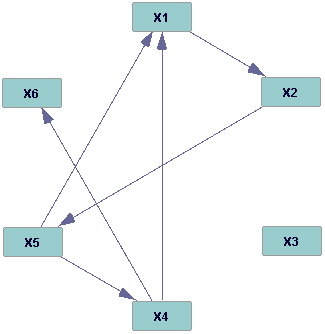When used as input to the linear regression box, the following window results:

To select a variable as the response variable, click on it in the leftmost box, and then click on the top right-pointing arrow. If you change your mind about which variable should be the response variable, simply click on another variable and click on the arrow again.
To select a variable as a predictor variable, click on it in the leftmost box, and then click on the second right- pointing arrow. To remove a predictor variable, click on it in the predictor box and then click on the left-pointing arrow.
Clicking “Sort Variables” rearranges the variables in the predictor box so that they follow the same order they did in the leftmost box. The alpha value in the lower left corner is a threshold for independence; the higher it is set, the less discerning Tetrad is when determining the independence of two variables.
When we click “Execute,” the results of the regression appear in the box to the right. For each predictor variable, Tetrad lists the standard error, t value, and p value, and whether its correlation with the response variable is significant.
The Output Graph tab contains a graphical model of the information contained in the Model tab. For the case in which X4 is the response variable and X1, X2, and X3 are the predictors, Tetrad finds that only X1 is significant, and the output graph looks like this:
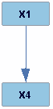Comparison to the true causal model shows that this correlation does exist, but that it runs in the opposite direction.
Logistic Regression
Logistic regression may be run on discrete, continuous, or mixed data sets; however, the response variable must be binary. In all other ways, the logistic regression box functions like the linear regression box.